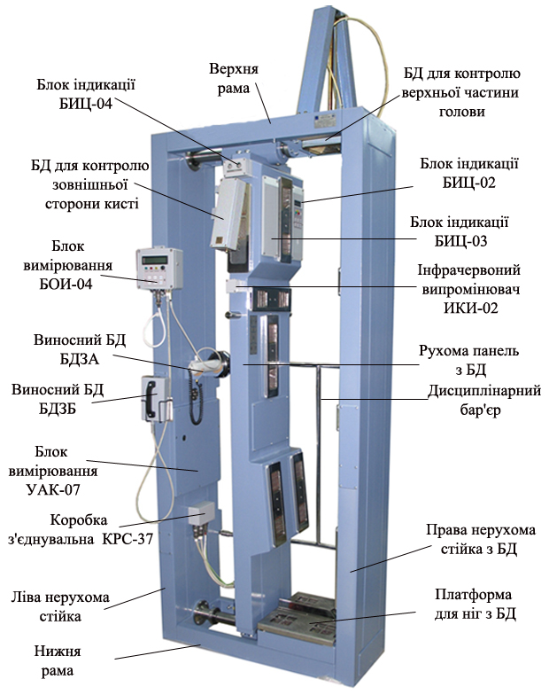
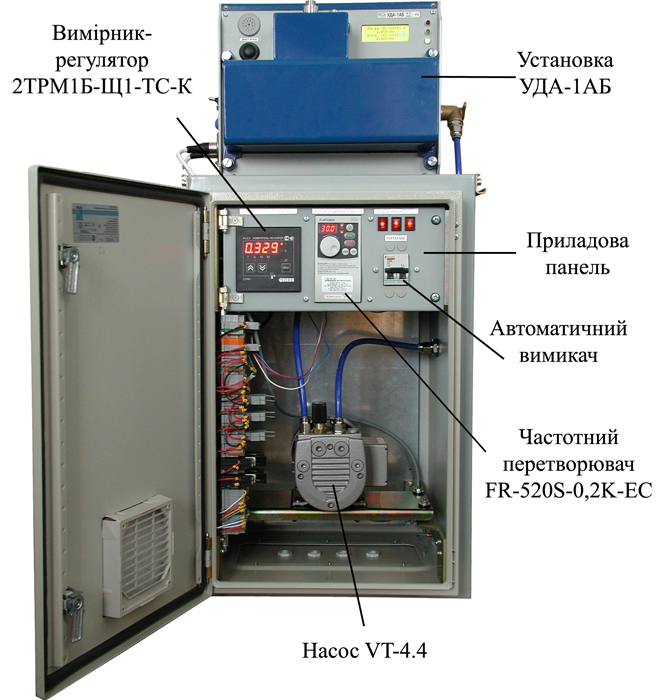
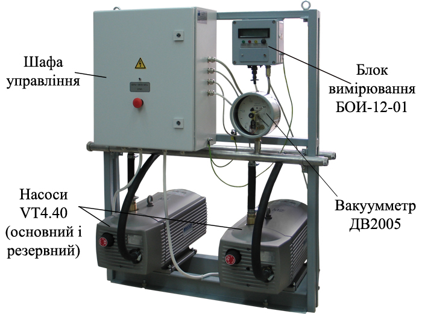

1993ЛЮТИЙ
Нова організаційна форма
Підприємство перереєстровано в товариство з обмеженою відповідальністю «Позитрон ГМБХ».
Розробка, виробництво, постачання та сервіс апаратури радіаційного контролю й моніторингу для науки, виробництва та екології 1991-2026
м. Жовті Води, Україна
Від окремого блока детектування
до системи радіаційного контролю.

Дякую за вашу зацікавленість продукцією нашого підприємства.
Радіаційний контроль потребує точних вимірювань, надійного обладнання та уважного ставлення до умов його застосування. Тому для нас важливо розуміти ваше завдання: що необхідно контролювати, де працюватиме прилад і як він має взаємодіяти з іншими системами.
«Позитрон ГМБХ» поєднує досвід розробки, виробництва та сервісного супроводу приладів радіаційного контролю. Ми прагнемо допомагати замовникам обирати відповідні рішення та підтримувати конструктивну взаємодію на всіх етапах роботи — від обговорення технічних вимог до експлуатації обладнання.
Запрошую вас ознайомитися з нашим каталогом і звернутися до фахівців підприємства. Будемо раді обговорити ваші завдання та можливості співпраці.
З повагою,
Олег Миколайович Бражій
Галузевий довідник: енергетика, технології та завдання радіаційного контролю. Джерела перевірено 11.10.2026; статистику за посиланнями оновлюють її власники.
Атомна галузь охоплює виробництво електроенергії, наукові дослідження, виготовлення обладнання, обслуговування установок і поводження з радіоактивними відходами. Енергетичні та дослідницькі реактори мають різні завдання; їх не слід об’єднувати в одну статистику.
Для порівняння країн важливі кількість блоків, встановлена потужність, фактичне виробництво, вік обладнання та етап життєвого циклу. База МАГАТЕ PRIS окремо враховує діючі реактори, реактори, що будуються, та остаточно зупинені реактори.
Завдання моніторингу: контроль дози та забруднення робочих місць, персоналу, транспорту й вантажів; спостереження за довкіллям; вимірювання під час ремонту та зняття з експлуатації. Обладнання добирають за величиною, діапазоном, умовами застосування та вимогами замовника.
Основу атомної генерації становлять чотири майданчики Енергоатома: Запорізька, Рівненська, Південноукраїнська та Хмельницька АЕС. Оператор наводить 15 блоків: 13 ВВЕР-1000 і два ВВЕР-440, загальною встановленою потужністю 13 835 МВт. Це характеристика парку, а не кількість одночасно працюючих блоків.
Галузь включає ремонтні, конструкторські та науково-технічні підрозділи, зберігання відпрацьованого палива й поводження з відходами. Потрібні радіаційний контроль, метрологічне забезпечення та сервіс приладів.
Фактичний режим АЕС, особливо Запорізької, перевіряють за актуальними повідомленнями оператора й МАГАТЕ. Інвестиційна програма, підготовка майданчика та будівництво реакторного блока — різні статуси; оголошений проєкт не означає введену потужність.
| Тип / сімейство | Основний принцип |
|---|---|
| PWR / ВВЕР | Вода під тиском; тепло передається паровому контуру через парогенератор. |
| BWR | Вода кипить у реакторі; пара надходить до турбіни. |
| PHWR / CANDU | Важка вода як сповільнювач; характерна канальна конструкція. |
| Газоохолоджувані / HTGR | Газовий теплоносій; високотемпературні проєкти також розглядають для промислового тепла. |
| Швидкі реактори | Робота на швидких нейтронах; різні варіанти теплоносія. |
| SMR | Малі модульні реактори: підхід до потужності й модульності, а не один фізичний тип. |
Строки та порядок залежать від країни й проєкту. Підготовчі роботи не тотожні статусу «будується» у PRIS. SMR не гарантує автоматично нижчу вартість чи коротший строк. Актуальну географію будівництва дивіться в офіційному реєстрі.
Огляд відкритих джерел станом на 11.10.2026. Це аналітичний довідник, а не повний інвентарний перелік кожної АЕС. Виробник, договірний постачальник, інтегратор та оператор можуть бути різними організаціями. Підтверджене застосування відокремлено від можливостей каталогу.
| Напрям | Вимірювання та можливості |
|---|---|
| Територія та приміщення | Стаціонарні гамма-пости вимірюють потужність дози, формують попередження та часові ряди. Метеодані допомагають оцінювати перенесення забруднення. Гамма-фон сам по собі не визначає альфа-/бета-забруднення чи склад радіонуклідів. [15] [17] |
| Повітря, викиди та скиди | Окремі канали контролюють аерозолі, радіоактивні гази, йод і рідкі середовища. Відбір проб, витрата повітря й методика визначають результат; потужність дози не замінює активність у Бк/м³. [15] [12] |
| Персонал і поверхні | Індивідуальні дозиметри обліковують опромінення людини; альфа-/бета-радіометри перевіряють шкіру та спецодяг. Це різні вимірювальні завдання. [16] [10] |
| Лабораторії та мобільна розвідка | Спектрометрія проб уточнює радіонуклідний склад; переносні й автомобільні комплекси обстежують територію. Карта потужності дози не є автоматично картою поверхневого забруднення. [15] |
| Майданчик | Відкриті відомості | Модель / постачальник |
|---|---|---|
| Рівненська АЕС | Оператор зазначає введення автоматизованої системи контролю радіаційного стану у 2004 році. | У перевіреній публікації моделі й постачальник не названі. [5] |
| Хмельницька АЕС | Повідомлення 05.02.2025 описує оновлений контроль території та план модернізації турбінного відділення, спецгазоочистки й індивідуальної дозиметрії. | Моделі та постачальники не розкриті; план 2025 року не підтверджує завершення всіх робіт. [2] |
| Південноукраїнська АЕС | У серпні 2026 року на тренуваннях використано пересувну радіометричну лабораторію із системою радіаційного контролю та метеостанцією. | Оператор лабораторії — Аварійно-технічний центр Енергоатома; моделі й виробник не названі. [3] |
| Запорізька АЕС | Є датовані повідомлення Енергоатома про радіаційний фон. | Ці повідомлення не підтверджують повний чинний склад обладнання чи постачальників. [6] |
| Чорнобильська АЕС — зняття з експлуатації | У вересні 2025 року лабораторія ІДК отримала модульну OSL-систему вимірювання доз зовнішнього опромінення. | Виробник — Mirion Technologies; конкретна модель і договірний постачальник не зазначені. [4] |
| Тип / модель | Можливості | Виробник / статус відомостей |
|---|---|---|
| АМП-12 «Пульс-1А» | Багатоканальний збір імпульсних та аналогових сигналів; до 60 імпульсних каналів, 0,01–6×10⁴ с⁻¹. Створення АСРК і модернізація АКРБ-03/06/08. | Позитрон ГМБХ. За каталогом — системи нормальної експлуатації; конкретну АЕС тут не встановлено. [7] |
| БДМГ-04 / МКС-2001 | Стаціонарне вимірювання гамма-потужності дози; МКС-2001 використовує змінні блоки детектування. Діапазон і величина залежать від виконання. | Позитрон ГМБХ. Підтверджена номенклатура виробника; конфігурація поставки потребує окремого підтвердження. [8] [9] |
| РЗБА-04-04М | Контроль альфа-/бета-забруднення шкіри та спецодягу, порогова сигналізація; виконання 40 контролює 18 ділянок бета-каналами. | Позитрон ГМБХ. Призначення та виконання підтверджені каталогом. [10] |
| ПК АСКРО; УДАБ-01, УДЖГ-01/14РМ1/03; РПН-01, РПС-01/02, РАС-02/03, РГС-01; СВТ-01М; ДКГ-01, ДКН-01 | Пости контролю, пристрої детектування, радіометри, стенди вимірювання активності викидів у вентиляційну трубу та дозиметри. | Атоменергомаш, філія Енергоатома. Офіційна номенклатура; точні ТТХ і розподіл за АЕС у публікації відсутні. [1] |
| RAMSYS: GIM 206K; BIM 201K; NIM 201K | Відповідно: гамма-потужність дози в аварійних умовах; бета-активність газових викидів; потужність нейтронного еквівалента дози. | Mirion Technologies. Можливості міжнародного каталогу; встановлення цих моделей на конкретних АЕС України цим оглядом не підтверджено. [11] [12] [13] |
| RadMonitor / БДБГ-09 | Автоматизований безперервний моніторинг гамма-фону, табло та програмне забезпечення. | ЕКОТЕСТ. Каталожне рішення; поставку на конкретну АЕС України тут не підтверджено. [14] |
PROZORRO · OPEN DATA
Пошук закупівель Prozorro та попереднє зіставлення з каталогом підприємства. Тексти закупівель залишаються українською.
38341200-9 — дозиметри; 38341000-7 — апаратура вимірювання радіації; 50411000-9 — ремонт вимірювальних приладів; 50433000-9 — калібрування. Коди послуг застосовувати разом із радіаційними ключовими словами.
Оберіть групу й натисніть «Знайти закупівлі». Порожнє поле ключових слів запускає готовий словник; власні запити (до восьми, через крапку з комою) замінюють його. Галузь заповнює редагований список назв замовників, а не офіційний класифікатор галузей. Для точного відбору використовуйте перевірені ЄДРПОУ. Почніть без обмеження за кодом ДК: замовники можуть зазначати різні коди. Спектрометри та радіометри бувають оптичними — перевіряйте вид випромінювання в документах.
Охоплення: завантажені сторінки пошукової видачі; повний реєстр не перевірено.
Джерело: офіційні відкриті дані Prozorro · API ↗
Документи доступні в картці. PDF/DOCX і скани можна прочитати кнопкою; результати OCR та відповідність вимогам має перевірити фахівець.
Радіометри, дозиметри, блоки детектування та допоміжні системи. Призначення й варіанти виконання — у картках виробів.
Характеристики наведено за каталогом 2024–2025. Конкретне виконання, комплектність та актуальні параметри уточнюються під час замовлення.
Тексти старого сайту збережено без скорочення. Дати, характеристики, сертифікати, імена та реквізити наведено в редакції джерела; відомості на 2026 рік уточнюються у підприємства.

Продукція ТОВ «Позитрон ГМБХ» відповідає вимогам технічного регламенту законодавчо регульованих засобів вимірювальної техніки, що підтверджується сертифікатом перевірки типу, виданим національним науковим центром «Інститут метрології».

Радіометр
РЗБА-04-04М

Дозиметр-радіометр
МКС-2001

Блок насосний
БН-01

Аналізатор
АМП-12 «Пульс-1А»

Блоки детектування
БДМГ-04

Радіометр
РКС-02 «Кордон»

Сигналізатор
СУРБ-01

Сигналізатор
СГИ-01

Радіометр
РУГ-2001
Джерело: positron.dp.ua ↗

Коротка інформація:
Радіометр забрудненості поверхонь альфа та бета-активними речовинами РЗБА-04-04М (далі радіометр) призначений для вимірювання забрудненості поверхонь (на шкірі або спецодягу персоналу) бета- і альфа-активними речовинами (за щільністю потоку альфа- і бета-частинок, що падають на вхідні вікна блоків детектування) і сигналізації про перевищення (або не перевищення) встановлених порогових рівнів.

Спеціальне розміщення стаціонарних блоків детектування БДЗБ на корпусі радіометра дозволяє робити одночасне вимірювання по 18 ділянкам забрудненості поверхні одягу (або шкіри) людини бета- активними речовинами. Вимірювання всіх інших ділянок забезпечується виносним блоком детектування БДЗБ (для вимірювання забрудненості бета- активними речовинами) і виносним блоком детектування БДЗА (для вимірювання забрудненості альфа- активними речовинами).
Радіометр РЗБА-04-04М відноситься до засобів вимірювальної техніки з пороговим пристроєм, в яких звукова і світлова сигналізація спрацьовує при перевищенні встановленого порогового рівня забрудненості бета та альфа-активними речовинами
Радіометр РЗБА-04-04М видає сигнал «ЧИСТО» і відмикає пристрій заборони виходу, якщо ні по одному зі стаціонарних каналів не відбулося перевищення рівня забрудненості бета - активними речовинами над заданим порогом.
Радіометр РЗБА-04-04М видає сигнал «БРУДНО» в разі перевищення рівня забрудненості бета - активними речовинами над заданим порогом хоча б по одному стаціонарному каналу.
Радіометр РЗБА-04-04М має можливість підключення до локальної обчислювальної мережі (ЛОМ) за допомогою інтерфейсу RS485 (або, за окремим замовленням, RS232).
Блоки детектування БДЗБ і БДЗА забезпечують перетворення потоку бета-і альфа-частинок, відповідно, в статистично розподілену послідовність імпульсів напруги, частота яких залежить від щільності потоку частинок.
Блоки вимірювання УАК-07 і БОИ-04 забезпечують аналіз і математичну обробку потоку електричних імпульсів, що надходять від блоків детектування, видачу сигналів про перевищення або неперевищення встановленого порогу (за допомогою індикаторів «КОНТРОЛЬ», «ЧИСТО» і «БРУДНО») та індикацію чисельних результатів вимірювання.

Радіометр забрудненості поверхонь альфа-і бета-активними речовинами РЗБА-04-04М пройшов державні приймальні випробування оцінки відповідності технічним регламентам законодавчо регульованих засобів вимірювальної техніки затверджених Постановою КМУ №94 від 13.01.2016 р. Радіометр забрудненості поверхонь РЗБА-04-04М має сертифікат перевірки типу № UA.TR.113-0064/04-17 версія 2 від 26.10.21 р.
| Параметри | Значення |
|---|---|
| Діапазон вимірювань радіометром щільності потоку бета-частинок з поверхні, хв-1∙см-2; в діапазоні енергій бета-частинок, МеВ |
від 0,5 до 1500 від 0,15 до 2,5 |
| Межі основної відносної похибки вимірювання радіометром щільності потоку бета-частинок при довірчій ймовірності 0,95 не перевищують,% | ± 30 |
| Діапазон вимірювань радіометром щільності потоку альфа-частинок з поверхні, хв-1∙см-2; в діапазоні енергій альфа-частинок, МеВ |
від 0,1 до 10000 від 4,13 до 5,6 |
| Межі основної відносної похибки вимірювання радіометром щільності потоку альфа-частинок з поверхні при довірчій ймовірності 0,95 не перевищують,% | ± 30 |
| Чутливість блоків детектування БДЗБ до бета-випромінювання від робочих еталонних джерел типу СО з радіонуклідами 90Sr+90Y не менше, (імп/с)/(хв-1∙см-2): - для каналів №1,13, 16-19; - для каналів №14 и №15 |
0.5 0.3 |
| Чутливість блоку детектування БДЗА до альфа- випромінювання від робочих еталонних джерел типу П9 з радіонуклідом 239Pu не менше, (імп/с)/(хв-1∙см-2) | 0,2 |
| Чутливість блоку детектування БДЗА до альфа- випромінювання від робочих еталонних джерел типу У8 з радіонуклідом 238U не менше, (імп/с)/(мин-1∙см-2) | 0,08 |
| Чутливість блоку детектування БДЗА до альфа- випромінювання від робочих еталонних джерел типу В4 з радіонуклідом 234U не менше, (імп/с)/(хв-1∙см-2) | 0,04 |
| Порогові рівні спрацьовування сигналізації встановлюються індивідуально для кожного вимірювального каналу, хв-1∙см-2: - для блока детектування БДЗА в межах - для блоков детектування БДЗБ в межах |
від 0,1 до 9999 від 5 до 9999 |
| Дискретність установки порогів, хв-1∙см-2: - при порогових рівнях менше 5 хв-1∙см-2 - при порогових рівнях більше 5 хв-1∙см-2 |
0,1 1 |
| Час безперервної роботи, годин на добу | Не обмежено |
| Час встановлення робочого режиму не більше, хв | 2 |
| Нестабільність показань радіометра за час безперервної роботи 24 год не більше,% | 5 |
| Споживана потужність з урахуванням потужності, споживаної підключеними до аналізатора блоків і пристроїв детектування не більше, ВА | 150 |
| Середнє напрацювання на відмову радіометра не менше, годин | 10000 |
| Середній термін служби радіометра не менше, років | 10 |
Радіометр забрудненості поверхонь альфа- і бета-активними речовинами РЗБА-04-04М здійснюється в різних виконаннях. Залежно від виконання радіометр може мати:
• різну кількість каналів і, відповідно, різну сумарну площу блоків детектування; • додаткові виносні блоки детектування для вимірювання забрудненості поверхонь альфа- і бета-активними нуклідами, підключені до автономного блоку вимірювання; • стаціонарні блоки детектування для контролю тильної сторони долонь; • рухомий блок детектування для вимірювання забрудненості верхньої частини голови; • вбудований промисловий комп'ютер; • один або два дисциплінарних бар'єри для проходу персоналу.
Являє собою стійку з 18 стаціонарними блоками детектування (далі БД) БДЗБ і блоком вимірювання УАК-07 (Що знаходиться всередині корпусу установки). Базове виконання оснащено блоком індикації БИЦ-03, на якому зображена у вигляді мнемосхеми фігура людини призначена для індикації області забруднення по кожному з 18 стаціонарних каналів. Виконання 20 має блок індикації і клавіатури БИЦ-02, за допомогою якого можна вивести числові результати вимірювання по кожному з 18 стаціонарних каналів, а також проводити налаштування радіометра. Базове виконання радіометра оснащено БД для контролю верхньої частини голови, розміщеного на рухомий осі. Положення блоку детектування верхньої частини голови регулюється в залежності від зросту людини. Також присутні стаціонарні БД для контролю тильної сторони долонь.
Базова модель оснащена виносним БД БДЗБ для контролю «сліпих місць» по бета забрудненню. Так само в базовій моделі передбачено виносний БД БДЗА для контролю ділянок людського тіла по альфа забруднення. Результати вимірювання по кожному з виносних каналів обробляються і виводяться на РКІ дисплей блоку вимірювання БОИ-04. У разі перевищення забруднення над рівнем встановленого порогового значення на блоці БОИ-04 спалахує червоний світлодіод («БРУДНО») і включається звукова сигналізація. У разі не перевищення порогу, спалахує зелений світлодіод («ЧИСТО»). Виконання 20 має два дисциплінарних бар'єри для проходу персоналу. Виконання 40 відрізняється наявністю тільки одного дисциплінарного бар'єру.

Радіометр РЗБА-04-04М виконання 20.01 і 40.01 є аналогами 20 і 40 виконань відповідно, за винятком однієї відмінності. Блок індикації БИЦ-03 замінено на виносний промисловий комп'ютер. Виконання 20.01 має два дисциплінарних бар'єри для проходу персоналу. Виконання 40.01 відрізняється наявністю тільки одного дисциплінарного бар'єру.

Стійка з 15 стаціонарними блоками детектування БДЗБ і блоком вимірювання УАК-07 (що знаходиться всередині корпусу установки). На відміну від базової моделі, відсутні стаціонарні блоки детектування для контролю верхньої частини голови і тильної сторони долонь. Виконання 21 оснащено двома дисциплінарними бар'єрами, а виконання 41 одним.

Стійка з 15 стаціонарними блоками детектування БДЗБ і блоком вимірювання УАК-07 (що знаходиться всередині корпусу установки). На відміну від базової моделі, відсутні: стаціонарні блоки детектування для контролю верхньої частини голови і тильної сторони долонь; виносні блоки детектування для контролю «сліпих» місць по бета- забрудненню; виносний блок для контролю ділянок людського тіла по альфа- забрудненню; блок БОИ-04. Виконання 22 оснащено двома дисциплінарними бар'єрами, а виконання 42 одним.

Стійка з 15 стаціонарними блоками детектування БДЗБ і блоком вимірювання УАК-07 (що знаходиться всередині корпусу установки). Радіометр оснащений виносним блоком детектування для контролю сліпих місць по бета- забрудненню. На відміну від базової моделі, відсутні: стаціонарні блоки детектування для контролю верхньої частини голови і тильної сторони долонь; виносний блок детектування для контролю ділянок тіла по альфа- забрудненню. Виконання 24 оснащено двома дисциплінарними бар'єрами, а виконання 44 одним.

Стійка з 18 стаціонарними блоками детектування БДЗБ і блоком вимірювання УАК-07 (що знаходиться всередині корпусу установки). Радіометр оснащений стаціонарними блоками детектування для контролю верхньої частини голови і тильної сторони долонь. Радіометр оснащений виносним блоком детектування БДЗБ для контролю «сліпих місць» по бета- забрудненню. На відміну від базового варіанту, відсутній виносний блок детектування БДЗА для контролю ділянок людського тіла по альфа- забрудненню. Всі інші вузли аналогічні базовій моделі. Виконання 28 оснащено двома дисциплінарними бар'єрами, а виконання 48 одним.

Стійка з 18 стаціонарними блоками детектування БДЗБ і блоком вимірювання УАК-07 (що знаходиться всередині корпусу установки). Радіометр оснащений стаціонарними блоками детектування для контролю верхньої частини голови і тильної сторони долонь. Радіометр оснащений виносним блоком детектування БДЗА для контролю ділянок тіла по альфа- забрудненню. Блок вимірювання БОИ-04 призначений для виведення результатів вимірювань по виносному каналу. На відміну від базового варіанту, відсутній: виносний блок детектування БДЗБ для контролю «сліпих» місць по бета- забрудненню. Всі інші вузли аналогічні базовій моделі. Виконання 29 оснащено двома дисциплінарними бар'єрами, а виконання 49 одним.

Стійка з 18 стаціонарними блоками детектування БДЗБ і блоком вимірювання УАК-07 (що знаходиться всередині корпусу установки). Радіометр оснащений стаціонарними блоками детектування для контролю верхньої частини голови і тильної сторони долонь. На відміну від базового варіанту відсутні виносні блоки детектування БДЗБ і БДЗА для контролю ділянок людського тіла по бета- альфа- забрудненню. Всі інші вузли аналогічні базовій моделі. Виконання 32 оснащено двома дисциплінарними бар'єрами, а виконання 52 одним.

Стійка з 17 стаціонарними блоками детектування БДЗБ і блоком вимірювання УАК-07 (що знаходиться всередині корпусу установки). Радіометр оснащений стаціонарними блоками детектування для контролю тильної сторони долонь. Радіометр оснащений виносним блоком детектування БДЗБ для контролю сліпих місць по бета- забрудненню. Блок вимірювання БОИ-04 призначений для виведення результатів вимірювань по виносного каналу. На відміну від базового варіанту, відсутній: стаціонарний блок детектування для контролю верхньої частини голови; виносний блок детектування БДЗА для контролю ділянок людського тіла по альфа- забрудненню. Всі інші вузли аналогічні базовій моделі. Виконання 35 оснащено двома дисциплінарними бар'єрами, а виконання 55 одним.

Радіометр РЗБА-04-04М вик. 68 контролює забрудненість поверхні по 36 ділянкам тіла людини 36-ма стаціонарними блоками, кожному з яких відповідає окремий вимірювальний канал. Радіометр РЗБА-04-04М вик. 68 являє собою стаціонарний пристрій, що складається з:
- стійки з 36 стаціонарними блоками детектування БДЗБ (БДЗБ-15 і БДЗБ-16) і блоком вимірювання УАК-07 (який розташований всередині стійки радіометра);
- виносного блоку детектування БДЗБ (БДЗБ-05) для вимірювання рівня забрудненості бета- активними речовинами будь-якої ділянки поверхні тіла;
- виносного блоку детектування БДЗА для вимірювання рівня забрудненості альфа- активними речовинами будь-якої ділянки поверхні тіла;
- блоку вимірювання БОИ-04, який обробляє і виводить на РКД (дисплей) результати вимірювань з виносних блоків БДЗБ і БДЗА;
- двох дверей з електромагнітними замками, що перешкоджає можливості проходження персоналу через радіометр без контролю.
Радіометр РЗБА-04-04М вик. 68 забезпечує: - світлову та звукову сигналізацію перевищення (сигнал «БРУДНО») або неперевищення (сигнал «ЧИСТО») встановлених порогових значень. Граничні значення встановлюються окремо для кожного каналу. Блок вимірювання БОИ-04 має власний звуковий і світловий сигналізатор «ЧИСТО», «БРУДНО»; - видачу (на кольоровий дисплей) візуальної і текстової інформації про результати контролю та стан блоків детектування в усіх режимах роботи радіометра; - відмикання пристрою заборони виходу в разі неперевищення порогового значення забрудненості по всіх каналах.
Радіометр РЗБА-04-04М вик. 71, 72 дозволяє проводити одночасне вимірювання по 18 ділянках забрудненості поверхні одягу (або шкірного покриву) людини бета-активними речовинами. Вимірювання забрудненості бета-активними речовинами (а також контроль рівня гамма-випромінювання) дрібних предметів забезпечується окремим блоком детектування. Всі блоки детектування реєструють змішаний потік гама та бета-випромінювання і при постачанні калібруються по щільності потоку частинок бета з поверхні. У виконаннях 71 та 72 альфа-канал (БД для реєстрації альфа-активних речовин) відсутній. У виконанні 71 є одні двері (вихідні) для проходу персоналу. У радіометрі виконання 72 – дві двері. Радіометр виробляє сигнал «брудно», якщо виміряний рівень забрудненості поверхонь по одному або декільком вимірювальним каналам перевищує встановлене граничне значення. Радіометр виробляє сигнал «ЧИСТО» і відключає замок вихідних дверей, якщо виміряний рівень забрудненості поверхонь по всіх вимірювальних каналах не перевищує встановлене граничне значення.

Стаціонарна установка РЗБА-04-04М виконання 27 призначена для вимірювання рівня забруднення рук альфа-активними речовинами по трьом каналам (два стаціонарних блока детектування на навісній стійці і один виносний блок детектування). Канали для контролю забруднення поверхності бета-активними речовинами в радіометрі РЗБА-04-04М виконання 27 відсутні.
Радіометр РЗБА-04-04М виконання 27 забезпечує:
• вимірювання рівня забруднення поверхні долонь( або їх тильной сторони) альфа-активними речовинами по двум каналам зі стаціонарними блоками детектування;
• вимірювання рівня забрудненості поверхні виносним БД.

Являє собою окремий виносний блок БДЗБ для контролю ділянок людського тіла по бета- забрудненню. Результати вимірювань виводяться на блок вимірювання БОИ-04, функції радіометра аналогічні функціям виносного блоку детектування БДЗБ на базовій моделі радіометра. Радіометр оснащений пристосуванням для кріплення на стіну. Відмінності від базової моделі: відсутні стаціонарні блоки детектування і виносний блок детектування по альфа- забрудненню.

Являє собою два виносних блока детектування БДЗБ і БДЗА для контролю ділянок людського тіла по бета- і альфа-забрудненню. Результати вимірювань виводяться на блок вимірювання БОИ-04, функції радіометра аналогічні функціям виносних блоків детектування БДЗБ і БДЗА на базовій моделі радіометра. Радіометр оснащений пристосуваннями для кріплення на стіну. Відмінності від базової моделі - відсутність стаціонарних блоків детектування.

Окремий виносний блок БДЗА, для контролю ділянок людського тіла по альфа- забрудненню. Результати вимірювань виводяться на блок вимірювання БОИ-04, функції радіометра аналогічні функціям виносного блоку детектування БДЗА на базовій моделі радіометра. Радіометр оснащений пристосуванням для кріплення на стіну. Відмінності від базової моделі, відсутні: стаціонарні блоки детектування; виносний блок детектування по бета- забрудненню.

Стаціонарна установка для контролю забруднення рук. Радіометр оснащений двома стаціонарними блоками детектування БДЗБ і блоком вимірювання УАК-07 для виведення результатів вимірювань і індикації перевищення або неперевищення встановлених порогових значень забруднення. Радіометр оснащений пристосуванням для кріплення на стіну. Відмінності від базового варіанту: кількість стаціонарних блоків детектування БДЗБ скорочено до двох, відсутні виносні блоки детектування для контролю ділянок людського тіла по альфа- і бета-забрудненню.

Стаціонарна установка для контролю забруднення рук і ніг по альфа- і бета-забрудненню. Радіометр оснащений двома стаціонарними блоками детектування БДЗБ, а також блоком вимірювання УАК-07 для виведення результатів вимірювань і індикації перевищення або неперевищення встановлених порогових значень забруднення. Відмінності від базового варіанту: кількість стаціонарних блоків детектування БДЗБ скорочено до чотирьох, відсутні виносні блоки детектування для контролю ділянок людського тіла по альфа- і бета-забрудненню.

Радіометр РЗБА-04-04М виконання 16.01 призначений для вимірювання рівня забрудненості одягу персоналу, рук і взуття бета-активними речовинами (по щільності потоку бета-частинок, що падають на вхідні вікна блоків детектування) і сигналізації про перевищення (або не перевищенні) встановлених граничних рівнів
Розміщення стаціонарних блоків детектування на корпусі радіометра дозволяє виробляти одночасне вимірювання забруднення поверхні бета-активними речовинами по 6 дільнках:
• долоні лівої руки;
• тильна сторона кисті лівої руки;
• долоні правої руки
• тильна сторона кисті правої руки;
• стопа лівої ноги;
• стопа правої ноги;
Для забезпечення вимірювання забрудненості бета-активними речовинами інших ділянок тіла (або одягу) в радіометрі є додатковий канал з виносним блоком детектування.
Радіометр РЗБА-04-04М виконання 16.02 призначений для вимірювання рівня забрудненості одягу персоналу, рук і взуття бета и альфа-активними речовинами (по щільності потоку альфа- і бета-частинок, що падають на вхідні вікна блоків детектування) і сигналізації про перевищення (або не перевищенні) встановлених граничних рівнів.
Розміщення стаціонарних блоків детектування на корпусі радіометра дозволяє виробляти одночасне вимірювання забруднення поверхні бета-активними речовинами по 6 дільнках:
• долоні лівої руки;
• тильна сторона кисті лівої руки;
• долоні правої руки
• тильна сторона кисті правої руки;
• стопа лівої ноги;
• стопа правої ноги;
Для забезпечення вимірювання забрудненості бета-активними речовинами інших ділянок тіла (або одягу) в радіометрі є додатковий канал з виносним блоком детектування.

Стаціонарна установка для контролю забруднення рук і для контролю ділянок людського тіла по бета- забрудненню. Радіометр оснащений двома стаціонарними блоками детектування БДЗБ і виносним блоком БДЗБ, а також блоком вимірювання УАК-07 для виведення результатів вимірювань і індикації перевищення або неперевищення встановлених порогових значень забруднення. Радіометр оснащений пристосуванням для кріплення на стіну. Відмінності від базового варіанту: кількість стаціонарних блоків детектування БДЗБ скорочено до двох, відсутній виносний блок детектування для контролю ділянок людського тіла по альфа- забрудненню.
Джерело: positron.dp.ua ↗

Коротка інформація:
Радіометр питомої активності РУГ-2001 (далі радіометр) призначений для оперативного визначення питомої активності природних радіонуклідів 232Th, 226Ra, 40K і техногенних радіонуклідів 60Co, 137Cs в пробах, що відбираються для хімічного аналізу металургійних виробництв. Радіометр застосовується в лабораторіях радіологічного контролю металургійних комбінатів.

В основу роботи радіометра покладено гамма-спектрометричний метод визначення вмісту радіонуклідів, заснований на вимірах розподілу амплітуд імпульсів від досліджуваних радіонуклідів в фіксованих енергетичних інтервалах.
Радіометр являє собою стаціонарний пристрій, що складається з наступних основних вузлів:
• cвинцевий захист (1 штука для одноканального радіометра, 2 штуки для двоканального радіометра); • блок детектування БДЭГ-01Д (1 штука для одноканального радіометра, 2 штуки для двоканального радіометра); • блок перетворювача БПА-01Д (в залежності від замовлення, поставляється в складі персонального комп'ютера або в окремому корпусі); • персональний комп'ютерСвинцевий захист служить захистом від впливу навколишнього природного фону на процес вимірювання.
Блок детектування перетворює потік енергій гамма-випромінювання в послідовність імпульсів відповідних амплітуд. На торці блоку детектування розташований колодязь для розміщення аналізованої проби.
Блок перетворювача БПА-01Д перетворює амплітуди імпульсів від блоку детектування в цифрові коди і передає їх у персональний комп'ютер. Блок перетворювача має два незалежні канали обробки інформації, до нього одночасно може бути підключено два блоки детектування. Залежно від замовлення, плата блоку перетворювача БПА-01Д встановлюється у вільний PCI-слот персонального комп'ютера або в окремий корпус. Обмін інформацією здійснюється через COM-порт.
| Параметри | Значення |
|---|---|
| Діапазон вимірювань радіометром питомої активності, Бк/кг | від 20 до 10000 |
| Реєстровані радіонукліди | 232Th, 226Ra, 40K 60Co, 137Cs |
| Межі основної відносної похибки вимірювання питомої активності при довірчій ймовірності 0,95 не більше, % | ± 30 |
| Мінімальна вимірювана активність 137Cs за час вимірювання 60 хв (при радіаційному фоні 0,15 мкЗв/год) при Р = 0,95, d = 50% не більше, Бк | 4 |
| Нестабільність градуювальної характеристики перетворення за 8 годин роботи не більше, % | ± 1 |
| Нестабільність лічильної характеристики за 8 годин роботи не більше, % | ± 5 |
| Час встановлення робочого режиму радіометра не більше, хв | 30 |
| Час безперервної роботи радіометра не менше, год | 8 |
| Значення часу вимірювання встановлюються в діапазоні, хв | від 10 до 60 |
| Умови експлуатації | |
|---|---|
| Температура навколишнього повітря, °С | від 10 до 35 |
| Відносна вологість повітря (при температурі +30 °С), % | 75 |
| Атмосферний тиск, кПа | від 84 до 106,7 |
Джерело: positron.dp.ua ↗


Коротка інформація:
Радіометр нейтронного і гамма-випромінювання РКС-02 «Кордон» (далі радіометр) застосовується для:
- оперативного виявлення санкціонованого і несанкціонованого ввезення-вивезення джерел нейтронного і гамма-випромінювань або забрудненого радіоактивними речовинами транспорту або вантажу на транспортних комунікаціях;
- для контролю несанкціонованого виносу (ввезення) джерел радіоактивного випромінювання (або забруднених радіоактивними речовинами матеріалів) під час проходу через контрольний простір персоналу при вході (або виході) на територію промислових об'єктів і об'єктів державної власності і т.д.
Радіометр являє собою стаціонарний пристрій, що складається з блоків детектування і блоку вимірювання з вбудованим блоком живлення.
Блоки детектування перетворюють сумарний потік нейтронного і гамма-випромінювання в послідовність імпульсів на виході. Принцип роботи блоків детектування заснований на сцинтиляції в пластмасовому сцинтиляторі. В якості детектора використовується пластмасовий сцинтилятор, чутливий до гамма і нейтронного випромінювання. Швидкість рахунку вихідної послідовності імпульсів пропорційна щільності сумарного потоку гамма-квантів і нейтронів в місці розташування блоку детектування.
Типове розташування радіометра на прикладі модифікації для автомобільного транспорту:
• Схема типового розташування радіометра; • Контроль двох смуг руху автотранспорту (вид зверху);Приклади встановлення радіометра РКС-02 «Кордон» на об'єктах замовників:


Радіометр нейтронного і гамма-випромінювання РКС-02 «Кордон» пройшов державні приймальні випробування оцінки відповідності технічним регламентам законодавчо регульованих засобів вимірювальної техніки затверджених Постановою КМУ №94 від 13.01.2016 р., має сертифікат перевірки типу № UA.TR.113-0064/05-17 версія 2 від 26.10.21 р
| Технічні характеристики РКС-02 «Кордон» | |
|---|---|
| Параметри | Значення |
| Діапазон реєстрованих енергій гамма-випромінювання, МеВ | від 0,06 до 3 |
| Діапазон реєстрованих енергій швидких нейтронів, МеВ | від 0,2 до 10 |
| Діапазон вимірювань щільності потоку нейтронного випромінювання, хв -1∙см-2 | від 0,1 до 10 |
| Межі основної відносної похибки вимірювання щільності потоку нейтронного випромінювання при довірчій ймовірності 0,95 не більше, % | ±40 |
| Діапазон вимірювання щільності потоку гамма-випромінювання з енергією 660 кеВ, хв -1∙см-2 | від 0,5 до 50 |
| Межі основної відносної похибки вимірювання щільності потоку гамма-випромінювання з енергією 660 кеВ при довірчій ймовірності 0,95 не більше, % | ±35 |
| Чутливість радіометра до гамма-випромінювання з енергією 660 кеВ:
– з блоком детектування БДПС-03М не менше, (імп/с)/(хв -1∙см-2) – з блоком детектування БДПС-06 не менше, (імп/с)/(хв -1∙см-2) |
300 440 |
| Діапазон значень часу вимірювання встановлюються в межах, с | від 0,125 до 128 |
| Час безперервної роботи не менше, годин | 24 |
| Нестабільність показань радіометра за час безперервної роботи 24 год не більше, % | 5 |
| Середнє напрацювання на відмову не менше, годин | 10000 |
| Середній термін служби радіометра не менше, років | 10 |
| Блок детектування БДПС-03М | ||||
|---|---|---|---|---|
| Вид випромінювання | Гамма-випромінювання | Нейтрони | ||
| Енергія гамма-випромінювання, кеВ | 60 | 660 | 1250 | PuBe джерело |
| Ефективність реєстрації, % | 15 | 100 | 80 | не менше 400 |
| Блок детектування БДПС-06 | ||||
| Вид випромінювання | Гамма-випромінювання | Нейтрони | ||
| Енергія гамма-випромінювання, кеВ | 60 | 660 | 1250 | PuBe джерело |
| Ефективність реєстрації, % | 15 | 100 | 80 | не менше 500 |
| Умови експлуатації | |
|---|---|
| Температура навколишнього повітря, °С - для блоків детектування - для блоку вимірювання та блоку живлення |
від -30 до +50 від +5 до +50 |
| Відносна вологість повітря (при температурі + 35 °C) не більше,%
- для блоків детектування - для блоку вимірювання та блоку живлення |
95 80 |
| Атмосферний тиск, кПа. | від 70 до 106 |
Існує три модифікації радіометра РКС-02 «Кордон»:
• для контролю залізничного транспорту; • для контролю автомобільного транспорту; • для контроля персоналу, пасажирів, багажу.Радіометр для контролю транспорту являє собою стаціонарний пристрій, що складається з наступних основних складових частин:
• блоки детектування (БДПС-03М або БДПС-06); • блок вимірювання УАК.До складу радіометра крім основних блоків входять, в залежності від умов поставки:
• датчик наявності об'єкта КБХ-01ПМ з інфрачервоним випромінювачем ИКИ-03М для вироблення сигналу про наявність об'єкта в зоні контролю. Принцип дії датчика заснований на перетині об'єктом інфрачервоного променя; • сирена БИЦ-09 для дублювання звукового і світлового сигналу тривоги в місці установки блоків детектування; • блок виносної сигналізації БИЦ-12 для контролю працездатності сирени БИЦ-09 і вимкнення сигналу при спрацьовуванні сигналу тривоги. Контроль працездатності забезпечується при натисканні кнопки на БИЦ-12. Відключення звукового сигналу відбувається за допомогою тумблера на БИЦ-12; • дві стійки (базові та додаткові) для кріплення блоків детектування. Стійки встановлюються з двох сторін шляху проходження об'єкта контролю. Усередині кожної стійки встановлений один або два, залежно від умов поставки, блока детектування. У кожній зі стійок з блоками детектування, встановлені свинцеві екрани, що зменшують вплив природного радіаційного фону з усіх боків, крім напрямку до об'єкту контролю.Радіометр для контролю персоналу виконаний у вигляді стаціонарних радіометричних воріт, що складаються з двох бічних стійок (стійка базова і стійка додаткова), нижнього і верхнього блоку. У кожній бічній стійці встановлено блок детектування БДПС-06 з довжиною сцинтилятора 1000 мм.
Основні вузли радіометра:
• блок детектування БДПС-06 (від 2 до 4 шт.); • блок вимірювання УАК; • блок живлення; • пристрій виявлення об'єкта (інфрачервоний випромінювач ИКИ-04, інфрачервоний приймач ИКП-03 і два вузла ПБУ-01); • бліц-лампа БИЦ-07; • плата кросова ПКЦ-19Джерело: positron.dp.ua ↗

Коротка інформація:
Дозиметр-радіометр МКС-2001 застосовується для проведення дозиметричного контролю в установах, де ведуться роботи із застосуванням радіоактивних речовин та інших радіаційно-небезпечних джерел іонізуючих випромінювань.
Дозиметр-радіометр МКС-2001 являє собою багатофункціональний стаціонарний прилад з цифровою індикацією показань, мікропроцесорним управлінням і наявністю змінних блоків (пристроїв) детектування БДМГ-04, УДЖГ-01, УДГБ-01, БДМГ-101, БДМН-100, які підключаються екранованим кабелем до блоку вимірювання БОИ-12 або до БОИ-12-01. Блок сигнализации БИЦ-17 (Поставляється на замовлення споживача) призначений для дублювання світлових і звукових сигналів про перевищення встановлених порогів виміряними значеннями.
Блок (пристрій) детектування перетворює значення вимірюваної фізичної величини в послідовність імпульсів на виході. Сигнали від блоку (пристрою) детектування надходять на вхід блоку вимірювання, де відбувається їх обробка.
Дозиметр-радіометр забезпечує установку двох порогів спрацьовування сигналізації - поріг попереджувальний і поріг аварійний. Перевищення порогів сигналізації відображається елементами світлової та звукової сигналізації. Світлова та звукова сигналізація перевищення порогів, виконана на елементах індикації зеленого, жовтого, червоного кольору і звуковому сигналізаторі, встановлених на блоці вимірювання БОИ-12.
Залежно від встановлених коефіцієнтів налаштування, при перевищенні порогів включається звукова сигналізація.
Кожен факт спрацьовування порогової сигналізації фіксується в журналі перевищень граничних значень.
При включенні дозиметр-радіометр автоматично ідентифікує тип підключеного блоку (пристрою) детектування.
В процесі роботи дозиметр-радіометр забезпечує автоматичне перемикання діапазону вимірювання для блоків детектування з перемиканням діапазонів і накопиченням виміряних значень у пам'яті (журналі виміряних значень) з періодичністю, заданою в параметрах налаштування.
Блок вимірювання БОИ-12 призначений для:
• лічення імпульсів, що надходять від підключеного блоку детектування; • визначення середньої швидкості підрахунку послідовності вхідних імпульсів; • обчислення результатів вимірювання, на підставі отриманої середньої швидкості підрахунку вхідної імпульсної послідовності; • виведення на РКД (дисплей) результатів вимірювання; • видачі світлових та звукових сигналів при перевищенні встановлених порогів (попереджувального і аварійного); • подачі напруги живлення на блок детектування; • запису і зберігання даних у журналах; • передачі і прийому інформації з незалежних інтерфейсів RS-232 і RS-485.
Дозиметр-радіометр МКС-2001 пройшов державні приймальні випробування оцінки відповідності технічним регламентам законодавчо регульованих засобів вимірювальної техніки затверджених Постановою КМУ №94 від 13.01.2016 р., має сертифікат перевірки типу № UA.TR.113-0064/03-17 версія 2 від 24.12.19 р.
| Параметри | Значення |
|---|---|
| Електроживлення дозиметра-радіометра (для виконань 01, 02, 05-09, 20-26) здійснюється від мережі змінного струму напругою, В з частотою, Гц |
від 187 до 242 50 ± 1 |
| Номінальне значення напруги електроживлення (для виконань 01 ,02, 05-09, 20-26) становить, В | 220 |
| Електроживлення дозиметра-радіометра (для виконань 10, 11, 14-19) здійснюється від джерела постійного струму напругою, В | +12(±0,5) |
| Струм споживання (для виконань 10, 11, 14-19) при номінальній напрузі живлення +12 В, мА | не більше 100 |
| Потужність, споживана дозиметром-радіометром, ВА для виконань 20, 21, 24 |
не більше 100 не більше 160 |
| Час встановлення робочого режиму дозиметра-радіометра, хв для МКС-2001 виконань 02,05, 06, 07, 09, 11, 16, 17 для МКС-2001 виконань 01, 08, 10, 14, 15, 18, 20, 21, 22, 23, 24, 25, 26 |
не більше 10 не більше 30 |
| Час безперервної роботи дозиметра-радіометра, годин на добу | не менше 24 |
| Нестабільність показів дозиметра-радіометра за час безперервної роботи 24 годин, % | не більше 5 |
| Середнє напрацювання до відмови дозиметра-радіометра, годин | не менше 10000 |
| Середній термін служби дозиметра-радіометра з урахуванням заміни окремих модулів і вузлів, що виробили свій ресурс, років | не менше 10 |
| Умови експлуатації | |
|---|---|
| Температура навколишнього середовища для БОИ-12 та БИЦ-17, °С | від +5 до +50 |
| Швидкість зміни температури, °С/годину | не більше 5 |
| Верхнє значення відносної вологості (при + 50 ºС),% Гранична відносна вологість (при +50 ºC) |
75 100 |
| Атмосферний тиск, кПа | від 54 до 540 |
При підключенні відповідного блоку детектування дозиметр-радіометр дозволяє вимірювати потужність еквівалентної дози гамма-випромінювання в зонах з низькою і високою потужностями дози, потужність еквівалентної дози нейтронного випромінювання (БДМН-100), об'ємну активність гамма випромінюючих нуклідів в рідині (УДЖГ-01).
Дозиметр-радіометр МКС-2001 з блоком детектування БДМГ-101 призначений для вимірювання потужності еквівалентної дози гамма-випромінювання в зонах з високим значенням потужності дози.
| Технічні характеристики блока детектування БДМГ-101 | |
|---|---|
| Параметри | Значення |
| Діапазон енергій гамма-випромінювання, МеВ | від 0,05 до 3,0 |
| Діапазон вимірювання потужності еквівалентної дози гамма-випромінювання, Зв/год | від 3∙10-4 до 2∙102 |
| Межі основної відносної похибки вимірювання потужності еквівалентної дози гамма-випромінювання при довірчій ймовірності 0,95 не більше, % | ± 25 |
Зміна чутливості дозиметра-радіометра з блоком детектування БДМГ-101 при постійній потужності еквівалентної дози в залежності від енергії реєстрованого випромінювання в діапазоні від 0,05 до 1,25 МеВ не більше 30% від значення, отриманого від робочого еталонного джерела 137Cs
Дозиметр-радіометр МКС-2001 з блоком детектування БДМН призначений для вимірювання потужності еквівалентної дози нейтронного випромінювання
| Технічні характеристики блока детектування БДМН-100 | |
|---|---|
| Параметри | Значення |
| Діапазон реєстрованих енергій нейтронного випромінювання, МеВ | від 0,025 до 10,0 |
| Діапазон вимірювання потужності еквівалентної дози нейтронного випромінювання, мЗв/год | від 0,1 до 100 |
| Межі основної відносної похибки вимірювання потужності еквівалентної дози нейтронного випромінювання при довірчій ймовірності 0,95 не більше,% | ± 25 |
Чутливість блоку детектування до випромінювання Рu-Ве джерела не менше 0,45 імп/с на 1 мкЗв/год.
* - Виконання 05 має в складі блок вимірювання БОИ-12-01 для підключення до аналізатора АМП-12 «Пульс-1А». Виконання 11 і 16 мають в складі блок вимірювання БОИ-12-01 з живленням+12 В. Виконання 11 поставляється без охолоджувача для блоку детектування БДМН.
Дозиметр-радіометр МКС-2001 з використанням блоку детектування БДМГ-04 призначений для вимірювання потужності еквівалентної дози гамма-випромінювання в широкому значенні вимірювань, починаючи з рівня фону.
| Технічні характеристики блока детектування БДМГ-04 | |
|---|---|
| Параметри | Значення |
| Діапазон енергій гамма-випромінювання, МеВ | від 0,05 до 3,0 |
| Діапазон вимірювання потужності еквівалентної дози гамма-випромінювання, Зв/год | від 0,05 до 10 |
| Чутливість блоку детектування при градуюванні по зразковому радіонукліду 137Cs, не менше: - БДМГ-04 (чутливий канал), с-1/(мкЗв∙ год-1); - БДМГ-04 (грубий канал), с-1/(мкЗв∙ год-1); |
4,0 8,0 |
Енергетична залежність чутливості блоку детектування БДМГ-04 щодо енергії 662 кеВ гамма-випромінювання радіонукліда 137Cs не більше ± 25 %
* - Виконання 07 має в складі блок вимірювання БОИ-12-01. Виконання 09 має в складі "інтелектуальний" блок детектування БДМГ-04. Виконання 17 має в складі блок вимірювань БОИ-12-01 з живленням +12 В.
Дозиметр-радіометр МКС-2001 з використанням блоку детектування БДМГ-04-02 призначений для вимірювання потужності еквівалентної дози гамма-випромінювання.
| Технічні характеристики блоку детектування БДМГ-04-02 | |
|---|---|
| Параметри | Значення |
| Діапазон реєстрованих енергій гамма-випромінювання, МеВ | от 0,05 до 3,0 |
| Діапазон вимірювання потужності еквівалентної дози гамма-випромінювання, Зв/год | від 0,04∙10-6 до 4∙10-3 |
Енергетична залежність чутливості блоку детектування БДМГ-04 щодо енергії 662 кеВ гамма-випромінювання радіонукліда 137Cs не більше ± 25 %
Дозиметр-радіометр МКС-2001 (з пристроєм детектування УДЖГ-01-01) призначений для вимірювання об'ємної активності радіонуклідів гамма-випромінювання в рідині. До складу УДЖГ-01-01 входить блок детектування БДПГ-01 і монтажний комплект. У УДЖГ-01-01, на відміну від УДЖГ-01, використовується тільки основний канал з блоком детектування БДПГ-01. Компенсаційний канал в УДЖГ-01-01 відсутній.
| Технічні характеристики пристрою детектування УДЖГ-01-01 | |
|---|---|
| Параметри | Значення |
| Діапазон вимірювань об'ємної активності радіонуклідів гамма-випромінювання в рідині, Бк/м3 | від 2∙103 до 1∙108 |
| Межа основної відносної похибки при вимірюванні об'ємної активності гамма-випромінювання радіонукліда 137Cs в рідині (при довірчій ймовірності 0,95),% | 30 |
| Діапазон енергій гамма-випромінювання, МеВ | від 0,1 до 3,0 |
| Чутливість SV при вимірюванні об'ємної активності гамма-випромінювання радіонукліда 137Cs в рідині, м3 | від 1,26∙10-3 до 2,34∙10-3 |
| Чутливість SТ при вимірюванні активності в діапазоні від 103 Бк до 106 Бк робочого еталонного джерела типу ОСГД з радіонуклідом 137Cs, розташованому на відстані 0,12 м від торця блоку детектування | від 1,12∙10-2 до 2,08∙10-2 |
*Примітка: варіант виконання 10 відрізняється від 18 виконання наявністю інтерфейсу RS485.
Дозиметр-радіометр МКС-2001 (з пристроєм детектування УДЖГ-01-02) призначений для вимірювання об'ємної активності радіонуклідів гамма-випромінювання в рідині. До складу УДЖГ-01-02 входять два блоки детектування БДПГ-01 (основний і компенсаційний) в свинцевому захисті. Основний блок детектування БДПГ-01 встановлений у вимірювальній камері. Дозиметр-радіометр МКС-2001 (далі по тексту - дозиметр-радіометр) застосовується для контролю рідких технологічних середовищ в складі апаратури контролю радіаційної безпеки (АКРБ) на атомних електростанціях (АЕС). Дозиметр-радіометр може застосовуватися для заміни пристрою детектування УДЖГ-04Р при модернізації АКРБ.
| Технічні характеристики пристрою детектування УДЖГ-01-02 | |
|---|---|
| Параметри | Значення |
| Діапазон вимірювань об'ємної активності радіонуклідів гамма-випромінювання в рідині, Бк/м3 | від 2,0∙104 до 1,0∙109 |
| Межа основної відносної похибки при вимірюванні об'ємної активності гамма-випромінювання радіонукліда 137Cs в рідині (при довірчій ймовірності 0,95), % | 35 |
| Діапазон енергій гамма-випромінювання, МеВ | від 0,1 до 3,0 |
| Чутливість SV при вимірюванні об'ємної активності гамма-випромінювання радіонукліда 137Cs в рідині, м3 | від 1,47∙10-4 до 2,74∙10-4 |
| Чутливість SТ при вимірюванні активності в діапазоні від 103 Бк до 106 Бк робочого еталонного джерела типу ОСГД з радіонуклідом 137Cs, розташованому на відстані 0,12 м від торця блоку детектування | 1,6∙10-2 |
Дозиметр-радіометр МКС-2001 (з пристроєм детектування УДЖГ-01-03) призначений для вимірювання об'ємної активності радіонуклідів гамма-випромінювання в рідині. До складу УДЖГ-01-03 входять два (основний і компенсаційний) блока детектування БДПГ-01-01. Блоки детектування встановлені в свинцевому захисті. Блоки детектування БДПГ-01-01 основного і компенсаційного каналів встановлені в вимірювальних камерах (зі складу свинцевого захисту). Дозиметр-радіометр МКС-2001 застосовується для контролю рідких технологічних середовищ в складі апаратури контролю радіаційної безпеки (АКРБ) на атомних електростанціях (АЕС). Дозиметр-радіометр з пристроєм детектування УДЖГ-01-03 може застосовуватися для заміни пристрою детектування УДЖГ-06Р при модернізації АКРБ.
| Технічні характеристики пристрою детектування УДЖГ-01-03 | |
|---|---|
| Параметри | Значення |
| Діапазон вимірювань об'ємної активності радіонуклідів гамма-випромінювання в рідині, Бк/м3 | від 1,0∙105 до 1,0∙1010 |
| Межа основної відносної похибки при вимірюванні об'ємної активності гамма-випромінювання радіонукліда 137Cs в рідині (при довірчій ймовірності 0,95), % | 30 |
| Діапазон енергій гамма-випромінювання, МеВ | від 0,1 до 3,0 |
| Чутливість SV при вимірюванні об'ємної активності гамма-випромінювання радіонукліда 137Cs в рідині, м3 | від 0,87∙10-5 до 1,61∙10-5 |
| Чутливість SТ при вимірюванні активності в діапазоні від 103 Бк до 106 Бк робочого еталонного джерела типу ОСГД з радіонуклідом 137Cs, розташованому на відстані 0,12 м від торця блоку детектування | від 2,59∙10-3 до 4,82∙10-3 |
Дозиметр-радіометр МКС-2001 20 і 22 виконань призначений для вимірювання об'ємної активності інертних радіоактивних газів (ІРГ). Дозиметр-радіометр застосовується для вимірювання об'ємної активності ІРГ в складі апаратури контролю радіаційної безпеки (АКРБ) на атомних електростанціях. До складу УДГБ-01 входять чутливі блоки детектування БДПБ-08 (основний канал) і БДПБ-08-04 (компенсаційний канал) і вимірювальна камера, встановлені в свинцевому захисті. Дозиметр-радіометр з пристроєм детектування УДГБ-01 може застосовуватися для заміни пристрою детектування УДГБ-08 (при модернізації АКРБ)..
| Технічні характеристики | |
|---|---|
| Параметри | Значения |
| Діапазон вимірювань об'ємної активності ІРГ, Бк/м3 | від 7,4 × 103 до 5,2 × 109 |
| Межа основної відносної похибки при вимірюванні об'ємної активності ІРГ (при довірчій ймовірності 0,95) становить, % | 35 |
| Чутливість SV при вимірюванні об'ємної активності ІРГ 85Kr, м3 | від 3,9∙10-5 до 8,1∙10-5 |
| Чутливість SТ при вимірюванні щільності потоку від робочого еталонного джерела бета-випромінювання з радіонуклідами
90Sr+90Y, с-1∙хв-1∙см-2
для блока детектування БДПБ-08 для блока детектування БДПБ-08-04 |
від 0,455 до 0,945 від 0,26 до 0,54 |
| Рівень власного фону в повітрі (при ПАЕД гамма-випромінювання не більше 0,2 мкЗв/год) для блоку детектування БДПБ-08 і БДПБ-08-04, с-1-1 | не більше 2 |
| Рівень власного фону блоків детектування БДПБ-08 і БДПБ-08-04, встановленого в свинцевому захисті (при ПАЕД гамма-випромінювання в повітрі не більше 0,2 мкЗв/год), с-1-1 | не більше 1 |
| Діапазон енергій гамма-випромінювання, МеВ | від 0,3 до 3,0 |
* - до складу дозиметра-радіометра МКС-2001 20-го виконання входить насосний блок БН-01.
| Маса і габарити дозиметра-радіометра МКС-2001 20, 22 виконань: | |||||
|---|---|---|---|---|---|
| Варіант виконаня | Габаритні розміри, мм, не більше | Маса, кг, не більше | |||
| Ширина | Висота | Глибина | |||
| Виконання 20 (з УДГБ-01 зі свинцевим захистом і блоком насосним БН-01) | 650 | 880 | 360 | 75 | |
| Виконання 22 (з УДГБ-01 зі свинцевим захистом) | 705 | 640 | 540 | 140 | |
Дозиметри-радіометри МКС-2001 21 і 23 виконань з пристроєм детектування УДГБ-01-01 призначені для вимірювання об'ємної активності інертних радіоактивних газів (ІРГ). До складу пристрою детектування УДГБ-01-01 входять грубі блоки детектування БДПБ-08-01 (основний канал), БДПБ-08-02 (компенсаційний канал) і вимірювальна камера, встановлені в свинцевому захисті. Дозиметр-радіометр МКС-2001 з пристроєм детектування УДГБ-01 застосовується для вимірювання об'ємної активності ІРГ в складі апаратури контролю радіаційної безпеки (АКРБ) на атомних електростанціях (АЕС). Дозиметр-радіометр з пристроєм детектування УДГБ-01-01 може застосовуватися для заміни пристрою детектування УДГБ-05.
| Технічні характеристики | |
|---|---|
| Параметри | Значення |
| Діапазон вимірювань об'ємної активності ІРГ, Бк/3 | від 3,7 × 108 до 1,1 × 1013 |
| Межа основної відносної похибки при вимірюванні об'ємної активності ІРГ (при довірчій ймовірності 0,95) становить, % | 35 |
| Чутливість SV при вимірюванні об'ємної активності ІРГ 85Kr, м3 | від 4,55∙10-9 до 9,45∙10-9 |
| Чутливість ST при вимірюванні щільності потоку від робочого еталонного джерела бета-випромінювання з радіонуклідами 90Sr+90Y, с-1∙хв-1∙см-2 для блоку детектування БДПБ-08-01 для блоку детектування БДПБ-08-02 |
від 0,47∙10-2 до 0,99∙10-2 від 0,455 до 0,945 від 0,85∙10-3 до 1,75∙10-3 |
| Рівень власного фону в повітрі (при ПАЕД гамма-випромінювання не більше 0,2 мкЗв/год) для блоку детектування БДПБ-08-01 і БДПБ-08-02, с-1 | не більше 0,5 |
Рівень власного фону блоків детектування БДПБ-08-01 і БДПБ-08-02, встановленого в свинцевому захисті (при ПАЕД гамма-випромінювання в повітрі не більше 0,2 мкЗв/год), с-1
| не більше 0,25 |
|
| Діапазон енергій гамма-випромінювання, МеВ | від 0,3 до 3,0 |
* - до складу дозиметра-радіометра МКС-2001 21-го виконання входить насосний блок БН-01.
| Маса і габарити дозиметра-радіометра МКС-2001 21, 23 виконань: | |||||
|---|---|---|---|---|---|
| Варіант виконання | Габаритні розміри, мм, не більше | Маса, кг, не більше | |||
| Ширина | Висота | Глибина | |||
| Виконання 21 (з УДГБ-01-01 зі свинцевим захистом, з блоком насосним БН-01) | 650 | 890 | 360 | 110 | |
| Виконання 23 (з УДГБ-01-01 зі свинцевим захистом) | 705 | 555 | 320 | 105 | |
Дозиметр-радіометр МКС-2001 24 і 25 виконань призначений для вимірювання об'ємної активності інертних радіоактивних газів (ІРГ). Дозиметр-радіометр застосовується для вимірювання об'ємної активності ІРГ в складі апаратури контролю радіаційної безпеки (АКРБ) на атомних електростанціях. Дозиметр-радіометр з пристроєм детектування УДГБ-01 може застосовуватися для заміни пристрою детектування УДГБ-08 (при модернізації АКРБ). До складу УДГБ-01 входять чутливі блоки детектування БДПБ-08 (основний канал), БДПБ-08-04 (компенсаційний канал) і вимірювальна камера. Дозиметри-радіометри МКС-2001 24 і 25 виконань є аналогами МКС-2001 21 і 23 виконань, але без свинцевого захисту.
| Технічні характеристики | |
|---|---|
| Параметри | Значення |
| Діапазон вимірювань об'ємної активності ІРГ, Бк/м3 | від 7,4 × 103 до 5,2 × 109 |
| Межа основної відносної похибки при вимірюванні об'ємної активності ІРГ (при довірчій ймовірності 0,95) становить, % | 35 |
| Чутливість SV при вимірюванні об'ємної активності ІРГ 85Kr, м3 | від 3,9∙10-5 до 8,1∙10-5 |
| Чутливість ST при вимірюванні щільності потоку від робочого еталонного джерела бета-випромінювання з радіонуклідами 90Sr+90Y, с-1∙мин-1∙см-2 для блоку детектування БДПБ-08 для блоку детектування БДПБ-08-04 |
від 0,455 до 0,945 від 0,26 до 0,54 |
| Рівень власного фону в повітрі (при ПАЕД гамма-випромінювання не більше 0,2 мкЗв/год) для блоку детектування БДПБ-08 і БДПБ-08-04, с-1 | не більше 2 |
| Рівень власного фону блоків детектування БДПБ-08 і БДПБ-08-04, встановленого в свинцевому захисті (при ПАЕД гамма-випромінювання в повітрі не більше 0,2 мкЗв/год), с-1 | не більше 1 |
| Діапазон енергій гамма-випромінювання, МеВ | від 0,3 до 3,0 |
* - до складу дозиметра-радіометра МКС-2001 24-го виконання входить насосний блок БН-01.
| Маса і габарити дозиметра-радіометра МКС-2001 24, 25 виконань | |||||
|---|---|---|---|---|---|
| Варіант виконання | Габаритні розміри, мм, не більше | Маса, кг, не більше | |||
| Ширина | Висота | Глибина | |||
| Виконання 24 (з УДГБ-01-02, без свинцевого захисту, з блоком насосним БН-01) | 650 | 880 | 360 | 75 | |
| Виконання 25 (з УДГБ-01-02, без свинцевого захисту) | 705 | 610 | 330 | 55 | |
Дозиметр-радіометр МКС-2001 виконання 26 (з двома блоками детектування БДМГ-04-02) призначений для вимірювання потужності еквівалентної дози гамма-випромінювання по двох незалежних каналах. Дозиметр-радіометр застосовується для проведення дозиметричного контролю в установах, де проводяться роботи із застосуванням радіоактивних речовин та інших радіаційно-небезпечних джерел іонізуючих випромінювань.
| Технічні характеристики блоку детектування БДМГ-04-02 | |
|---|---|
| Параметри | Значення |
| Діапазон енергій гамма-випромінювання, МеВ | від 0,05 до 3,0 |
| Діапазон вимірювання потужності еквівалентної дози гамма-випромінювання, Зв/год | від 0,05∙10-6 до 2∙10 -3 |
| Енергетична залежність чутливості блоку детектування БДМГ-04 щодо енергії 662 кеВ гамма-випромінювання радіонукліда 137Cs | не більше ± 25 % |
Джерело: positron.dp.ua ↗

Коротка інформація:
Блоки детектування БДМГ-04-00, БДМГ-04-01, БДМГ-04-02, БДМГ-04-03 і БДМГ-04-04 призначені для вимірювання потужності еквівалентної дози гамма-випромінювання (далі по тексту - МЕкД гамма-випромінювання). Блок детектування БДМГ-04-02Б призначений для вимірювання потужності поглиненої дози гамма-випромінювання в повітрі (далі по тексту - МПД гамма-випромінювання).
Блоки детектування відносяться до стаціонарних засобів вимірювальної техніки (ЗВТ), що служать для контролю радіаційної обстановки і проходять державні випробуванням згідно з ДСТУ 3400:2006.
Блоки детектування застосовуються:
• в складі апаратури контролю радіаційної безпеки (АКРБ) на атомних електростанціях (АЕС); • спільно зі стандартними ЗВТ (дозиметр-радіометр МКС-2001, аналізатор багатоканальний паралельного лічення АМП-12 «Пульс-1А» та ін.); • спільно зі стандартною електронно-фізичною апаратурою, що має відповідні входи (для прийому послідовності статистично розподілених імпульсів, інтерфейс RS-485 або потоковий вхід).
Блоки детектування БДМГ-04 пройшли державні приймальні випробування оцінки відповідності технічним регламентам законодавчо регульованих засобів вимірювальної техніки затверджених Постановою КМУ №94 від 13.01.2016 р, має сертифікат перевірки типу № UA.TR.113-0064 / 01-17 версія 2 від 26.10.21 р.
Діапазон реєстрованих енергій гамма-випромінювання від 0,05 до 3,0 МеВ.
Діапазон вимірювання МЕкД і МПД гамма-випромінювання для кожного з варіантів виконання блоків детектування наведено в таблиці:
| Варіант виконання | Діапазон вимірів | Примітка |
|---|---|---|
| БДМГ-04-00 | від 0,04∙10-6 до 10 Зв/год | Два канали: №1 (з лічильником високої чутливості) і №2 (з лічильником низької чутливості) |
| БДМГ-04-01 | від 1∙10-6 до 10 Зв/год | Два канали: №1 (з лічильником середньої чутливості) і №2 (з лічильником низької чутливості) |
| БДМГ-04-02 | від 0,04∙10-6 до 4∙10-3 Зв/год | Один канал (з лічильником високої чутливості) |
| БДМГ-04-03 | від 0,1∙10-3 до 10 Зв/год | Один канал (з лічильником низької чутливості) |
| БДМГ-04-04 | від 1∙10-6 до 50∙10-3 Зв/год | Один канал (з лічильником середньої чутливості) |
| БДМГ-04-02Б | від 0,04∙10-6до 4∙10-3 Гр/год | Один канал (з лічильником високої чутливості), вимірює МПД гамма-випромінювання |
| Технічні характеристики БДМГ-04 | |
|---|---|
| Параметри | Значення |
| Час встановлення робочого режиму блоку детектування не більше, хв | 2 |
| Час безперервної роботи блоку детектування не менше, годин на добу | 24 |
| Нестабільність показань блоку детектування за час безперервної роботи 24 год, не більше,% | 5 |
| Потужність, споживана блоком детектування, не більше, ВА | 2 |
| Електроживлення блоку детектування здійснюється від джерела живлення постійного струму з напругою, В | від + 8,0 до +42,0 |
| Умови експлуатації | |
|---|---|
| Температура навколишнього повітря, °С | від -40 до +75 |
| Відносна вологість, % при температурі +70° С (верхнє значення) при температурі +50° С (граничне значення) |
до 75 до 100 |
| Атмосферний тиск, кПа | від 54 до 540 |
Блоки детектування БДМГ-04-02, БДМГ-04-02Б, БДМГ-04-03 і БДМГ-04-04 мають у своєму складі по одному лічильнику. Блоки детектування БДМГ-04-00 і БДМГ-04-01 мають в своєму складі по два лічильника. Кожен з лічильників входить до складу окремого вимірювального каналу (грубий і чутливий - для БДМГ-04-00, грубий і середньої чутливості - для БДМГ-04-01).
Корпус блоків детектування виконаний у вигляді циліндра, матеріал корпусу - алюмінієвий сплав. Габаритні розміри варіантів виконань блоків детектування відрізняються довжиною (від 230 до 420 мм), діаметр - 50 мм.
Усередині корпусу блоків детектування встановлена плата вузла ПДГГ-01, на якій встановлені всі елементи блоків детектування.
Для забезпечення сейсмостійкості блоків детектування, стійкості до дії синусоїдальних вібрацій і механічних ударів, плата вузла ПДГГ-01 встановлена на спеціальних кулько-пружинних фіксаторах (амортизаторах).
Блок детектування при експлуатації кріпиться до вертикальної поверхні (до стіни, балки, конструкції і т.д.) за допомогою тримача.
Для забезпечення зручності монтажу блоку детектування на об'єкті, з блоком детектування може поставлятися коробка сполучна КРС-29 або блок сигналізації БИЦ-17. Сполучна коробка КРС-29 і блок сигналізації БИЦ-17 забезпечують підключення кабелів зв'язку до пружинних клемних з'єднувачів без розпаювання роз'ємів на об'єкті. У блоці сигналізації БИЦ-17 і коробці сполучній КРС-29 встановлені елементи, що забезпечують виконання вимог до електромагнітної сумісності (забезпечують нормальне функціонування блоку детектування БДМГ-04 в умовах електромагнітної обстановки середньої жорсткості, група виконання по завадостійкості П3 по НП 306.5.02/3.035.)
Джерело: positron.dp.ua ↗


Коротка інформація:
Аналізатор багатоканальний паралельного лічення АМП-12 «Пульс-1А» призначений для:
- одночасного прийому по декількох каналах імпульсних сигналів, що надходять від блоків і пристроїв детектування (БД і ПД) іонізуючих випромінювань у вигляді послідовності статистично розподілених імпульсів і виміру швидкості лічення імпульсів;
- одночасного прийому по декількох каналах аналогових сигналів постійного струму і напруги від датчиків з уніфікованими вихідними сигналами і перерахунку їх в фізичні величини по кожному каналу вимірювання.
Коротка інформація:
Аналізатор багатоканальний паралельного лічення АМП-12 «Пульс-1А» призначений для:
- одночасного прийому по декількох каналах імпульсних сигналів, що надходять від блоків і пристроїв детектування (БД і ПД) іонізуючих випромінювань у вигляді послідовності статистично розподілених імпульсів і виміру швидкості лічення імпульсів;
- одночасного прийому по декількох каналах аналогових сигналів постійного струму і напруги від датчиків з уніфікованими вихідними сигналами і перерахунку їх в фізичні величини по кожному каналу вимірювання.
Аналізатор багатоканальний паралельного лічення АМП-12 «Пульс-1А» (далі аналізатор) є основним структурним елементом автоматизованої системи радіаційного контролю (АСРК) АЕС і призначений для створення нової системи або модернізації існуючих АКРБ-03, 06, 08 і їх аналогів, які побудовані за трирівневою схемою:
• перший (нижній) рівень - блоки і пристрої детектування; • другий (середній) рівень - пристрої накопичення та обробки інформації; • третій (верхній) рівень - комплекс технічних засобів, який об'єднує всі пристрої накопичення та обробки інформації та здійснює управління роботою системи в цілому.Аналізатор застосовується в вимірювальних інформаційних системах радіаційного контролю для нормальних умов експлуатації (ІІ СРК-Н) на АЕС.
Аналізатор є засобом вимірювальної техніки і відповідно до ГОСТ 27452-87 відноситься до технічних засобів ІІ СРК-Н АЕС.
Аналізатор згідно НП 306.2.202-2015 відноситься до технічних засобів автоматизації (ТСА) інформаційних систем нормальної експлуатації. По впливу на безпеку АЕС аналізатор відноситься до класу нормальної експлуатації і класифікується як 4Н згідно НП 306.2.141-2008

Аналізатор АМП-12 «Пульс-1А» пройшов приймальні випробування, оцінку відповідності технічним регламентам законодавчо регульованих засобів вимірювальної техніки затверджених Постановою КМУ №94 від 13.01.2016 р, має сертифікат перевірки типу № UA.TR.113-0064/02-17 версія 2 от 26.10.21 г. ТУ У 33.2-19130157-009-203.
| Параметри | Значення |
|---|---|
| Діапазон вимірювання швидкості лічення імпульсів, с-1 | від 0,01 до 6×104 |
| Діапазон частоти реєстрації вхідних імпульсів, Гц | від 1×10-2 до 6×104 |
| Амплітуда імпульсів, В | від 3 до 12 |
| Тривалість імпульсів, мкс | от 0,2 до 2,5 (на рівні не менше 50% від амплітуди імпульсу) |
| Полярність імпульсів | Позитивна |
| Кількість каналів для прийому імпульсних сигналів | не більше 60 |
| Діапазон вимірювання постійного струму, мА | від 0,05 до 20 |
| Діапазон вимірювання постійної напруги, В | від 0,1 до 10 |
| Кількість вхідних сигналів постійного струму і напруги | не більше 60 |
| Нестабільність показань, % | не більше 0,5 |
| Час безперервної роботи, годин на добу | 24 |
| Час встановлення робочого режиму, хв | не більше 2 |
| Час вимірювання, с: - при вимірюванні швидкості лічення імпульсів; - при вимірюванні постійної напруги |
від 1 до 10000 не більше 2 |
| Споживана потужність з урахуванням потужності, споживаної підключеними до аналізатора блоків і пристроїв детектування, ВА | не більше 950 |
Джерело: positron.dp.ua ↗

Коротка інформація:
Блок призначений для прокачування повітря через вимірювальні пристрої установок УДА-1АБ, УДГ-1Б і УДГБ-01Т (виробництво НПП "Доза", Росія), що працюють спільно (послідовне пневматичне з'єднання установок УДА-1АБ, УДГ-1Б і блоку).
Блок здійснює контроль забрудненості стрічкового фільтру установки УДА-1АБ і ініціює при необхідності зміну кадру стрічкового фільтру установкою УДА-1АБ. Блок здійснює контроль цілісності стрічкового фільтру установки УДА-1АБ і викликає видачу аварійного сигналу установкою УДА-1АБ при пошкодженні (розриві) стрічкового фільтру. Відбір проб повітря може здійснюватися як безпосередньо з досліджуваної атмосфери виробничих приміщень, так і за допомогою ізокінетичного зонду з вентиляційних систем АЕС (Пробовідбірник OS-1700 виробництва компанії "АМЕТЕК", США).

Переваги:
• блоки забезпечують постійну витрату повітря через вимірювальні прилади і пристрої. Значення витрати можна змінювати за допомогою настроювальних параметрів;; • блоки проводять діагностику вбудованих пристроїв; • блоки покзують перепад тисків на вимірювальних приладах і установках; • оснащуються двома насосами, що працюють за принципом «гарячого» резервування (при відмові основного насосу, перемикання на резервний насос відбувається без участі оператора); • забезпечують ПІД-регулювання витрат повітря, що прокачується в залежності від витрат вихідного середовища, з якого проводиться відбір проб (відкачка); • здійснює контроль перепаду тиску на аналітичному фільтрі (вимірювальних приладах), діагностику вбудованих пристроїв, зовнішнього витратоміра і датчика температури.| Технічні характеристики БН-01-01 | |
|---|---|
| Параметри | Значення |
| Діапазон завдання номінальної продуктивності блоку, л/хв | від 0 до 73 |
| Електроживлення блоку здійснюється від однофазної мережі змінного струму напругою, В і частотою, Гц |
від 187 до 242 від 49 до 51 |
| Потужність, споживана блоком, ВА, | не більше 300 |
| Ступінь захисту насосного блоку | P54 по ГОСТ14254 |
| Середнє напрацювання на відмову блоку, год | не менше 10000 |
| Середній термін служби блоку, років | не менше 10 |
| Середній час відновлення працездатного стану блоку, год | не більше 1 |

Блок призначений для безперервного прокачування повітря в системах пробовідбору (для приладів, які здійснюють вимір об'ємної активності аерозолів, ІРГ і об'ємної активності йодів). Блок здійснює контроль розрідження на його вході і підтримує це розрідження в заданих межах. У разі неможливості підтримки розрідження на вході блоку в заданих межах, блок здійснює автоматичний перехід на роботу від резервного насосу.
Блок для забезпечення безперебійної роботи має в своєму складі два насоси. Залежно від параметрів налаштування, при відмові одного (основного) насосу, блок насосний автоматично включає другий (резервний) насос. Блок насосний в процесі функціонування забезпечує постійну автоматичну перевірку працездатності перетворювача частоти і насосів (основного і дублюючого). Для забезпечення захисту від несанкціонованого доступу, блок має спеціальний ключ для відкриття дверей шафи управління.
Функціонально блок складається з наступних вузлів:
• два вакуумних насоси VT4.40; • блок вимірювання БОИ-12-01; • шафа управління ШТКД3.624.022; • вакуумметр ДВ2005 (-1 до 0).| Технічні характеристики БН-01-04 | |
|---|---|
| Параметри | Значення |
| Максимальна продуктивність блоку, л/хв | 660 |
| Діапазон виміру розрідження, кг/см2 | від 0 до -1 |
| Діапазон встановлення нижньої межі діапазону регулювання розрідження, кг/см2 | від 0,05 до -0,95 |
| Діапазон встановлення верхньої межі діапазону регулювання розрідження, кг/см2 | від -0,05 до -0,95 |
| Діапазон регулювання продуктивності блоку | від 100 до 660 |
| Тип інтерфейсів для зв'язку з верхнім рівнем блок вимірювання перетворювач частоти |
RS-485 RS-422 |
| Час встановлення робочого режиму, хв | не більше 1 |
| Електроживлення блоку здійснюється від трифазної мережі змінного струму напругою, В частотою, Гц * - номінальне значення напруги електроживлення - 380 В |
від 323 до 418* від 49 до 51 |
| Потужність, споживана блоком, кВА | не більше 1,7 |
| Час безперервної роботи блоку не менше, годин на добу | 24 |
| Середнє напрацювання на відмову блоку, год | не менше 10000 |
| Середній термін служби блоку, років | не менше 10 |
| Умови експлуатації | |
|---|---|
| Температура навколишнього середовища, °С | від 5 до +50 |
| Верхнє значення відносної вологості при температурі не вище 35 °C без конденсації вологи,% | 80 |
| Барометричний тиск, кПа | від 84 до 106,7 |
Джерело: positron.dp.ua ↗

Коротка інформація:
Сигналізатор рівня радіометричний безконтактний СУРБ-01 призначений для безперервного безконтактного позиційного контролю рівня різних середовищ: розчинів, суспензій, пульп і сипучих матеріалів, які заповнюють наявні технологічні апарати: резервуари, лотки, бункера тощо. А також для безперервного безконтактного позиційного контролю рівня розділу двох середовищ з різною щільністю.

Принцип дії сигналізатора рівня заснований на вимірюванні щільності потоку гамма-випромінювання і активації вихідного сигналу при зменшенні щільності потоку гамма-випромінювання при його перекритті контрольованим середовищем. Застосовується для автоматичного контролю і управління технологічними процесами в різних галузях промисловості.
Сигналізатор являє собою стаціонарний пристрій, який складається з наступних основних складових частин:
• Блок детектування БДПС-03М • Блок вимірювання УАК-11.Середній термін служби приладу - не менше 10 років. Критерій граничного стану - економічна недоцільність відновлення працездатності приладу ремонтом.
Особливості:
• Мікропроцесорне управління; • Блок детектування на основі пластмасового сцинтилятора; • Можливість інтегрування в АСУТП; • Двопровідна лінія підключення блоку детектування; • Діагностика блоку детектування і кабелю зв'язку з блоком детектування; • Гальванічна розв'язка блоку детектування і вихідного сигналу від загального проводу блоку вимірювання; • Архівування всіх подій: включення і виключення приладу, перехід швидкості рахунку через встановлені пороги, відмова блоку детектування, обрив кабелю; • Захист блоку детектування від помилкового підключення;| Блок детектування БДПС-03М | |
|---|---|
| Параметри | Значення |
| Тип блока детектування | Сцинтиляційний |
| Матеріал детектора | Пластиковий сцинтилятор |
| Матеріал корпуса детектора | Нержавіюча сталь |
| Підключення до блоку вимірювання | Двопровідна лінія |
| Чутливість до ізотопу 137Cs (відстань 0,5 м від детектора) | 2 (імп/с)/кБк |
| Максимальна швидкість рахунку | 100000 імп/с |
| Температура | від -30 до +50 °С |
| Відносна вологість | до (95 ± 3) % |
| Стійкість до синусоїдальної вібрації | + |
| Стійкість до механічних ударів | + |
| Ступінь захисту | IP65 |
| Габаритні розміри, мм, (довжина * діаметр) | 350 * 75 |
| Маса | не більше 3,5 кг |
| Блок вимірювання УАК-11 | |
|---|---|
| Технічні характеристики | Значення |
| Тип пристрою управління | Мікроконтролер |
| Матеріал корпуса блока | Ударостійкий пластик |
| Режими роботи | «Позитив» / «Негатив» |
| Діапазон налаштування нижнього порога спрацьовування | від 0 до 64999 імп/с |
| Діапазон налаштування верхнього порога спрацьовування | від 0 до 64999 імп/с |
| Затримка на включення вихідного сигналу | Регульована от 0 до 60 с |
| Затримка на виключення вихідного сигналу | Регульована от 0 до 60 с |
| Вихідний дискретний сигнал для управління зовнішнім реле | 12 В постійного струму |
| Максимальне навантаження вихідного сигналу | 0,5 А |
| Гальванічна розв'язка вихідного сигналу від загального проводу | + |
| Напруга живлення блоку детектування | 24 В постійного струму |
| Гальванічна розв'язка живлення блоку детектування від загального проводу | + |
| Відображення інформації | Рідкокристалічний дисплей 4 рядка по 20 символів |
| Діагностика відмови блоку детектування | + |
| Діагностика обриву кабелю зв'язку з блоком детектування | + |
| Таймер реального часу | + |
| Архівування подій в енергонезалежній пам'яті | + |
| Інтерфейс зв'язку з верхнім рівнем | RS-485, ізольований |
| Інтерфейс зв'язку сервійсний | USB |
| Умови експлуатації | |
|---|---|
| Температура повітря для блоку вимірювання, °С | від 5 до +50 |
| Температура навколишнього повітря для блоку вимірювання, °С | від -30 до +50 |
| Відносна вологість для блоку детектування при температурі +35°С, % | до (80+/-3) |
| Відносна вологість для блоку вимірювання при температурі +35°С, % | до (95+/-3) |
| Атмосферний тиск, кПа % | від 70 до 106 |
Джерело: positron.dp.ua ↗


Коротка інформація:
Сигналізатор гамма-випромінювання СГИ-01 призначений для контролю збереження джерел гамма випромінювання, які розміщені в захисних контейнерах. Сигналізатор безперервно вимірює рівень гамма-випромінювання в точці його установки і виробляє сигнал тривоги в двох випадках:
- при несанкціонованому вилученні гамма-джерела з захисного контейнера
- в разі несанкціонованого переміщення контейнера разом з джерелом за межі зони контролю сигналізатора.
Коротка інформація:
Сигналізатор гамма-випромінювання СГИ-01 призначений для контролю збереження джерел гамма випромінювання, які розміщені в захисних контейнерах. Сигналізатор безперервно вимірює рівень гамма-випромінювання в точці його установки і виробляє сигнал тривоги в двох випадках:
- при несанкціонованому вилученні гамма-джерела з захисного контейнера
- в разі несанкціонованого переміщення контейнера разом з джерелом за межі зони контролю сигналізатора.
При несанкціонованому вилученні джерела з контейнера відбувається підвищення рівня випромінювання в місці установки сигналізатора, що призводить до видачі сигналізатором сигналу тривоги.
При несанкціонованому переміщенні контейнера разом з джерелом за межі зони контролю сигналізатора рівень випромінювання зменшується, що також призводить до видачі сигналу тривоги. Сигналізатор являє собою стаціонарний датчик рівня гамма випромінювання. Сигналізатор безперервно вимірює рівень гамма-випромінювання від контрольованого блоку гамма-джерела (БГД), здійснює порівняння виміряного значення з верхнім і нижнім граничними значеннями. У тому випадку, якщо рівень гамма випромінювання стає нижче нижнього порогу або вище верхнього порогу, сигналізатор видає сигнал тривоги. Верхній і нижній пороги сигналізатора встановлюються шляхом запису їх значень в пам'ять сигналізатора.
Сигналізатор встановлюється в місцях стаціонарного розміщення БГД, що входять до складу радіоізотопних приладів технологічного контролю - плотномірів, рівнемірів, товщиномірів, конвеєрних терезів, гамма-реле і т. п. Або до складу медичного обладнання для радіотерапії.
Сигналізатор виявляє:
• розкриття захисного контейнеру з джерелом гамма-випромінювання (БГД) - перевищення виміряних значень гамма-випромінювання над граничним значенням; • відсутність джерела гамма-випромінювання (БГД) в контрольованій зоні - зниження виміряних значень менше порогового значення.Технічні характеристики сигналізатора СГИ-01:
• Габаритні розміри: ширина - 80 мм, висота - 60 мм, глибина - 180 мм • Маса сигналізатора не більше 0,5 кг. • Живлення сигналізатора здійснюється від джерела живлення постійного струму напругою від 8 до 36 В (номінальне значення 12 В). • Струм, споживаний сигналізатором від джерела живлення, не перевищує 250 мА при включенні (протягом 2 секунд під час запуску імпульсних перетворювачів) і 50 мА при безперервному режимі роботи.Джерело: positron.dp.ua ↗
Обладнання для контролю персоналу, матеріалів і довкілля. Оберіть напрям, щоб переглянути відповідні вироби.
Конструкторський відділ, підготовка виробництва, виготовлення, випробування та забезпечення якості — підрозділи єдиного виробничого циклу.
Створення нових і модернізація чинних конструкцій. Підготовка виробництва спільно з виробничо-технічним бюро.
Механо-заготівельна дільниця, складально-монтажна дільниця та дільниця регулювання.
Відділ випробувань і служба забезпечення якості беруть участь у виготовленні та контролі продукції.
Підприємство «Позитрон» засновано в 1991 році в місті Жовті Води. У проєкті сайту 2026 року використовується нова назва «Позитрон ГМБХ».

Розробка, виробництво, постачання та сервіс апаратури радіаційного контролю й моніторингу для науки, виробництва та екології 1991-2026
Підприємство спеціалізується на приладах і системах радіаційного та радіоекологічного контролю. У презентації відображено постачання для АЕС і проєкти модернізації систем радіаційного контролю.
Робота із замовником охоплює розробку, виробництво, постачання та сервіс апаратури в Україні й за кордоном.
Презентація підприємства · PDF ↗Вихідні матеріали містять відомості про систему якості за ДСТУ ISO 9001:2015 та сертифікати перевірки типу окремих виробів. Актуальні документи й сфера їх дії надаються для обраного обладнання.
Перейти до документів →Продукція виготовляється в контрольованих умовах, встановлених сертифікованою Bureau Veritas Certification Системою менеджменту якості, яка відповідає вимогам ISO 9001:2015, номер сертифікату: UA231547.
ISO · 9001:2015 Bureau Veritas Certification · UA231547
Історія системи якості →Фотографії установок на об’єктах замовників та архівних випробувань. Назви об’єктів наведено за матеріалами підприємства; для решти знімків зазначено вид радіаційного контролю.
Переглянути приклади →Тексти старого сайту збережено без скорочення. Дати, характеристики, сертифікати, імена та реквізити наведено в редакції джерела; відомості на 2026 рік уточнюються у підприємства.


Наше підприємство спеціалізується в області розробки і виробництва приладів, а також систем радіаційного та радіоекологічного контролю, призначених для використання на підприємствах атомної енергетики, пропускних пунктах на державному кордоні, в наукових дослідженнях, медицині, екологічному моніторингу. Підприємство забезпечує розробку, виробництво, поставку та сервіс апаратури в Україні і за кордоном.
Сьогодні «Позитрон ГМБХ» розробляє і виготовляє, модернізує і вдосконалює, виводить на ринок все нові й нові системи та прилади. Нам довіряють все більш складні і відповідальні проекти, і ми з успіхом їх виконуємо.
Упродовж усього періоду існування
«Позитрон ГМБХ»
ставить перед собою складні завдання та з успіхом їх виконує.
За більш ніж 30-річну історію наше підприємство налагодило
контакти з багатьма компаніями, з якими успішно працює по цей день


Джерело: positron.dp.ua ↗

На підприємстві ТОВ «Позитрон ГМБХ» з 2005 року функціонує сертифікована система якості. Діюча система якості відповідає вимогам ДСТУ ISO 9001: 2015 (ISO 9001: 2015). Система якості сертифікована національним органом України з сертифікації ДП «Укрметртестстандарт» (реєстраційний номер сертифіката відповідності - № UA.C.465-21 від 05.07.2021).
Нижче представлена коротка історія створення та розвитку системи якості:
У 1995 р. була розроблена і впроваджена СМЯ по ДСТУ ISO 9001 - 95 (в рамках виконання умов ліцензії № 07-ПІ-95-117 від 21.11.1995 р. на розробку і проектування приладів радіаційного контролю для об'єктів ядерної енергії).
У 2002 р. проведено аудит СМЯ робочою групою ВП "ХАЕС". За результатами аудиту підприємство внесено до списку постачальників для НАЕК «Енергоатом» (номер у списку 106 - лист Дирекції з якості Департаменту ліцензування НАЕК "ЕНЕРГОАТОМ" вих. № 06/205 від 16.04.2003).
2003 р. - проведено аудит СМЯ комісією ДСП "ЧАЕС". ТОВ «Позитрон ГМБХ» включено до Переліку затверджених постачальників ДСП "ЧАЕС" (рішення про можливість використання продукції постачальника №5 від 17.07.2003 р).
2004 р. - розроблена і впроваджена СМЯ по ДСТУ ISO 9001 - 2001 (ISO 9001: 2000), а так само проведено аудит СМЯ комісією ВП "ЗАЕС". Підприємство затверджено в якості постачальника ВП "ЗАЕС" (рішення № РШ-П.1.18.022-04 від 17.11.2004 г).
У 2005 р. - проведено аудит СМЯ комісією ДП «Укрметртестстандарт». За результатами роботи комісії СМЯ, ТОВ «ПОЗИТРОН ГМБХ» сертифіковано (сертифікат відповідності вимогам ДСТУ ISO 9001-2001 (ISO 9001: 2000) № UA 2.002.1371 від 05.01.2005). В цьому ж році проведено черговий аудит СМЯ комісією ВП "ХАЕС". ТОВ «ПОЗИТРОН ГМБХ» затверджено в якості корпоративного постачальника ДП НАЕК «Енергоатом» (рішення про затвердження постачальника № РШ-П 0.03.065-05 від 27.10.05 р).
У 2006 і 2007 рр. - проведено наглядовий аудит СМЯ комісією ДП «Укрметртестстандарт».
2008 р. - проведена комплексна перевірка СМЯ комісією ДП НАЕК «Енергоатом». За результатами перевірки ТОВ «ПОЗИТРОН ГМБХ» затверджено в якості корпоративного постачальника для АЕС України (рішення ДП НАЕК «Енергоатом» №РШ-П 0.08.063-07 від 03.01.2008). В цьому ж році проведено черговий наглядовий аудит СМЯ комісією ДП «Укрметртестстандарт».
2009 р. - був проведений черговий наглядовий аудит СМЯ комісією ДП «Укрметртестстандарт».
У 2010 р. проведено коректування СМЯ, відповідно до впроваджених ДСТУ ISO 9001: 2009. СМЯ ТОВ «ПОЗИТРОН GМBH» сертифіковано по ДСТУ ISO 9001: 2009 (ISO 9001: 2008) (сертифікат відповідності UA 2.002.04146-10 від 05.01.2010, виданий національним органом України з сертифікації ДП «Укрметртестстандарт»).
2011 р. - проведена чергова перевірка СМЯ комісією ДП НАЕК «Енергоатом». За результатами перевірки підприємство ТОВ «ПОЗИТРОН ГМБХ» затверджено в якості постачальника ДП НАЕК «Енергоатом» (рішення ДП НАЕК «Енергоатом» РШ-П 0.03.042-11 від 07.06.2011). В цьому ж році проведено черговий наглядовий аудит СМЯ комісією ДП «Укрметртестстандарт».
У 2012 і 2013 рр. був проведений черговий наглядовий аудит СМЯ комісією ДП «Укрметртестстандарт».
2014 р. - проведена чергова перевірка СМЯ комісією ДП НАЕК «Енергоатом». За результатами перевірки підприємство ТОВ «ПОЗИТРОН ГМБХ» затверджено в якості постачальника ДП НАЕК «Енергоатом» (рішення ДП НАЕК «Енергоатом» РШ-П 0.03.051-14 від 25.06.2014).
У 2015 р. проведено коректування СМЯ відповідно до впроваджених ДСТУ ISO 9001: 2009. СМЯ ТОВ «ПОЗИТРОН ГМБХ» сертифікована по ДСТУ ISO 9001: 2009 (ISO 9001: 2008) (сертифікат відповідності UA 2.002.08851-15 від 09.02.2015, виданий національним органом України з сертифікації ДП «Укрметртестстандарт»).
У 2018 р. проведено коректування СМЯ відповідно до впроваджених ДСТУ ISO 9001: 2015. СМЯ ТОВ «ПОЗИТРОН ГМБХ» сертифікована по ДСТУ ISO 9001: 2015 (ISO 9001: 2015) (сертифікат відповідності UA 2.002.08851-15 від 04.07.2018, виданий національним органом України з сертифікації ДП «Укрметртестстандарт»).
2019 р. - проведена чергова перевірка СМЯ комісією ДП НАЕК «Енергоатом». За результатами перевірки підприємство ТОВ «ПОЗИТРОН ГМБХ» затверджено в якості постачальника ДП НАЕК «Енергоатом» (рішення ДП НАЕК «Енергоатом» РШ-П 0.35.074-19 від 22.07.2019).
У 2021 р. проведена чергова перевірка СМЯ. СМЯ підприємства ТОВ «Позитрон ГМБХ» сертифікована по ДСТУ ISO 9001:2015 (ISO 9001:2015) (сертифікат відповідності № UA.С.465-21 від 05.07.2021, виданий національним органом України з сертифікації ДП «Укрметртестстандарт»).
Щорічно підприємство «Позитрон ГМБХ» ставить перед собою нові цілі у сфері якості для стабільного виробництва високоякісних приладів радіаційного контролю та підвищення задоволеності споживачів.
Джерело: positron.dp.ua ↗

За всі роки існування підприємство «Позитрон ГМБХ» завжди бере активну участь у міжнародних та національних виставках, семінарах та презентаціях, де показує новітні розробки в галузі виробництва приладів, а також систем радіаційного та радіоекологічного контролю.


ТОВ «ПОЗИТРОН ГМБХ» нагороджено Дипломом Міжнародної виставки «Атомна промисловість» (м.Санкт-Петербург, Росія) за подання високоякісної продукції та послуг, Дипломом Міжнародної виставки-ярмарки промислових технологій, засобів виробництва, товарів і послуг країн СНД (м. Київ, Україна), Дипломом Виставки-презентації установ техногенної безпеки та екології організованої Державним комітетом ядерного регулювання України «За активну участь і плідну роботу на виставці-презентації «Реалізація державної політики в сфері забезпечення ядерної та радіаційної безпеки» і багатьма іншими.


За даними Державного комітету статистики України, в 2005 році підприємство "Позитрон ГМБХ" зайняло 2 місце в бізнес-рейтингу підприємств галузі "Виробництво контрольно-вимірювальної апаратури". ТОВ "Позитрон ГМБХ" був нагороджений відзнакою "Лідер економіки України" і внесений до міжнародного каталогу Торгово-Промислової Палати України.
Джерело: positron.dp.ua ↗


Виконавчий директор
Назаров Володимир Олександрович
 Телефон: + 38 (077) 755-46-46
Телефон: + 38 (077) 755-46-46
 e-mail: info@positron.dp.ua
e-mail: info@positron.dp.ua

Технічний директор — Головний конструктор
Берзін Олег Олександрович
Телефон: + 38 (077) 755-46-46
e-mail: berzin@positron.dp.ua

Заст. директора з маркетингу та ЗЕД
Олініченко Дмитро Олегович
Телефон: + 38 (067) 631-88-04
e-mail: olinichenko@positron.dp.ua

Заст. директора з виробництва
Дуднік Володимир Олександрович
Телефон: + 38 (077) 755-46-46
e-mail: dudnik@positron.dp.ua

Заст. директора з підготовки вироб-ва
Зазулін Юрій Вікторович
Телефон: + 38 (067) 633-61-37
e-mail: zazulin@positron.dp.ua

Фінансовий директор
Франішина Катерина Василівна
Телефон: + 38 (097) 507-89-40
e-mail: franishina@positron.dp.ua
Джерело: positron.dp.ua ↗
Люди, перші розробки та проєкти, що сформували підприємство. Хронологію складено за історичним розділом попереднього сайту.
За ініціативою В. О. Назарова завод «Електрон», Східний гірничо-збагачувальний комбінат та Інститут підготовки й перепідготовки кадрів створили в Жовтих Водах мале державне підприємство «Позитрон».
Основу колективу склали фахівці найбільшого в Україні заводу «Електрон», який випускав широку номенклатуру приладів і систем ядерного приладобудування.
Підприємство перереєстровано в товариство з обмеженою відповідальністю «Позитрон ГМБХ».
Співпраця з європейськими й американськими виробниками: сервіс MIRA-661, складання AlphaGUARD, просування SkyLink; власний радіометр «КСИРА 2010Z».
Освоєно «СИГНАЛ-150», регулятор РТМ-01 і систему обліку молока «Нектар».
Розроблено РПС-01; перші серійні системи встановлено в аеропорту Харкова та автотерміналі «Автопорт Чоп».
Модернізація РЗБ-04-04 для Запорізької АЕС привела до створення РЗБА-04-04М і постачання для АЕС «Козлодуй».
Створено РКС-02 «Кордон»; розпочато співпрацю з «Вестроном» щодо модернізації радіаційного контролю АЕС.
Серійний випуск АМП-12 «Пульс-1А» продовжив розробки «Пульс-1М», розпочаті в 1995 році.
Модернізовано 40 радіометрів РЗБА-04-04М для санпропускника СП 1430.
Поставлено 176 аналізаторів «Пульс-1А», 805 блоків БДМГ-04 і 163 дозиметри-радіометри МКС-2001.
Нова назва в проєкті оновленого сайту.
Історичні обсяги постачання та проєкти стосуються зазначених періодів. Хронологія не підтверджує поточний статус постачальника або чинність попередніх сертифікатів.
Повна історія на попередньому сайті ↗Тексти старого сайту збережено без скорочення. Дати, характеристики, сертифікати, імена та реквізити наведено в редакції джерела; відомості на 2026 рік уточнюються у підприємства.

У 1991 році з ініціативи Володимира Олександровича Назарова, трьома державними організаціями Міністерства середнього машинобудування, розташованими в м. Жовті Води, Дніпропетровської області: приладовим заводом «Електрон», Східним гірничо-збагачувальним комбінатом та Інститутом підготовки та перепідготовки кадрів, було створено мале державне підприємство «Позитрон». У лютому 1993 року, воно було перереєстровано в Товариство з обмеженою відповідальністю «Позитрон ГМБХ». Колектив підприємства складався з фахівців високого класу, професіоналів своєї справи, які мали великий практичний досвід розробки, виробництва і впровадження виробів і проектів будь-якої складності, які працювали на найбільшому в Україні заводі «Електрон», що випускав широку номенклатуру приладів і систем ядерного приладобудування.
На початкових етапах своєї діяльності були встановлені контакти з багатьма фірмами Європи і Америки, виробниками радіометричної і дозиметричної апаратури (РДА); з представниками Європейського Співтовариства та представниками МАГАТЕ. Це дозволило вивчити номенклатуру продукції, організацію розробки, виробництва і збуту, отримати зразки нових приладів з контролю вмісту радону і забруднення радіонуклідами продуктів харчування, розроблені і виготовлені в Німеччині, Швеції та США. З фірмою Genitrоn Instruments ГМБХ був підписаний контракт про сервісне обслуговування на території України, Білорусі та Росії дозиметрів MIRA-661, поставлених в рамках гуманітарної допомоги.
Через Європейське Співтовариство було розпочато роботи по залученню капіталу європейських фірм до спільної розробки і кооперативного виробництва РДА. Також були отримані зразки дозиметричних і радіометричних приладів зарубіжних фірм для контролю продуктів харчування: LB 200 (Німеччина), монітор радону ATMOS 12D (Швеція), набір вибухобезпечних електретних вимірників радону у воді і повітрі, вимірників аерозолів тритію (система Е-РЕRM, фірма Rad Elec, СШA), спектрометр переносний TISA (Німеччина), дозиметр MIRA-661 для виконання робіт з дозиметричного контролю та контролю радону в приміщеннях, контролю продуктів харчування.

Налагодивши тісні ділові стосунки з німецькою фірмою «Genetron Instruments ГМБХ», наше підприємство почало просувати на ринок СНД автоматизовану систему контролю радіаційного стану (АСКРО) - SkyLink.
Активно розвиваючи співробітництво з нашими німецькими партнерами - підприємство налагодило кооперированное виробництво по збірці професійного радон-монітора AlphaGUARD, призначеного для безперервного автоматичного вимірювання об'ємної активності радону в повітрі. А також спільно з УНЦРМ, НПФ «РОСА», м.Київ, «Позитрон ГМБХ» розробив перший прилад власного виробництва - радіометр «КСИРА 2010Z» (комплекс засобів вимірювань альфа-активності радону в повітрі).
Однак важке економічне становище України, в період з 1991 по 1995 роки, перешкоджало розвитку виробництва радіаційної та дозиметричної апаратури. Падіння попиту на ринку таких приладів поставило підприємство перед питанням виживання і фахівці, крім розробки профільних виробів, змушені були розробляти іншу продукцію, як-то:
• сигнальний гучномовний пристрій (СГУ) «СИГНАЛ-150», для служб МВС, МНС, СБУ, швидкої допомоги, пожежників та ін. служб;
• регулятор температури РТМ-01;
• систему обліку молока «Нектар»
Таким чином, підприємству вдалося вижити в найскладніший час і завдяки ефективному управлінню, воно зуміло знайти своє місце на ринку і утримати позиції.
У 1995 році, розвиваючи свій виробничий потенціал в області радіаційного приладобудування, за рекомендаціями Держкомкордону України, був розроблений індикатор сумарного потоку нейтронного і гамма випромінювання РПС-01 «Кордон». Ця система («Кордон») оптимально вписувалася в концепцію розвитку екологічного і радіоекологічного контролю в пунктах пропуску через державний кордон України. Ця концепція була затверджена постановою Кабінету Міністрів України № 113 від 22.01.1995 р. та № 198 від 20.03.1995 р. Уже в 1996 році були затверджені технічні умови на індикатор РПС-01 «Кордон» і узгоджені в Держстандарті України. У тому ж, 1996 році, був отриманий сертифікат Держстандарту Росії, а в 1999 році індикатор сертифікований Держстандартом України. Перші індикатори РПС-01 «Кордон» серійного зразка були введені в експлуатацію в 1996 році на міжнародному терміналі "Аеропорт Харків", м.Харків та міжнародному автотерміналі «Автопорт Чоп», м. Ужгород. Отримана висока оцінка фахівців Інституту ядерних досліджень Академії наук України і ВНДІМ ім. Менделєєва м. Санкт-Петербург, дозволили здійснити поставки системи «Кордон» в Німеччину та країни СНД. З цього моменту система «Кордон» отримала «атестат зрілості» і путівку в життя. Незважаючи на успіхи, підприємство не зупинялося на досягнутому, і в 2000-2001 роках була здійснена модернізація індикатора РПС-01 «Кордон». Радіометр нейтронного і гамма випромінювання РКС-02 «Кордон» було внесено в Держреєстр засобів вимірювальної техніки під № У1475-01. Завдяки цьому, кількість користувачів і географія поставок значно розширилась.
Паралельно з виробництвом системи «Кордон», підприємство, виконувало технічне завдання Запорізької АЕС з модернізації установок РЗБ-04-04. Протягом короткого часу було розроблено якісно новий виріб - установка сигнальна РЗБ-04-04М. У період з 1996 по 1998 рік на ЗАЕС було поставлено 5 таких установок. У 1998 році була проведена чергова модернізація установки РЗБ-04-04М з відповідним розширенням переліку вирішуваних завдань. Нова установка отримала назву «Радіометр забрудненості поверхонь альфа- і бета-активними речовинами РЗБА-04-04М». Проведена модернізація і поліпшені технічні характеристики установки дозволили укласти міжнародний контракт на поставку таких установок для АЕС «Козлодуй», Болгарія.
Особливе місце в історії розвитку підприємства займає виконання договору укладеного між ДСП "Чорнобильська АЕС" і ТОВ "Позитрон ГМБХ", в рамках якого «Позитрон ГМБХ» модернізував і здав в експлуатацію 40 радіометрів РЗБА-04-04М для санпропускнику СП 1430 ДСП «Чорнобильська АЕС». Це було перше серйозне випробування для всього підприємства і дуже велика відповідальність, але і тут «Позитрон» показав себе надійним і відповідальним партнером, якому, по праву, можна довірити рішення найскладнішого завдання. Сьогодні радіометри РЗБА-04-04М успішно експлуатують всі АЕС України, а також на об'єктах СВЯП-2, саншлюзи об'єкта «Укриття», ДСП «Чорнобильська АЕС» і на багатьох інших об'єктах, як в Україні, так і за її межами.
Найбільш значна частина радіометрів (з 2001 року, загалом, поставлено 174 одиниці різної модифікації), сьогодні працює на підприємствах ядерної енергетики Російської Федерації. Величезний внесок у просуванні даного обладнання на території РФ належить ТОВ НВП «ДОЗА» (м.Москва, м Зеленоград) - одного з найбільших розробників, виробників і постачальників обладнання радіаційного контролю в Росії і країнах СНД.
Ще одним важливим напрямком роботи підприємства було створення багатоканальної установки автоматизованого збору, обробки, представлення інформації і управління датчиками «Пульс-1М», розробка якого почалася ще в 1995 році. Для поставки на Південно-Українську АЕС установка «Пульс 1М» пройшла сертифікаційні випробування по ДСТУ 3413. А в 1998 році був поставлений 2-й аналізатор «Пульс-1М» на Хмельницьку АЕС з підключенням 200 блоків детектування.
Грунтуючись на досвіді експлуатації, отриманому в результаті встановлених раніше приладів, була проведена модернізація установки «Пульс-1М» і в 2003 році, успішно пройшовши державні випробування, був запущений в серійне виробництво аналізатор багатоканальний паралельного лічення АМП-12 «Пульс-1А». В цьому ж році аналізатор АПМ-12 «Пульс-1А» активно впроваджується на атомні станції України і Литви.
Початок серйозним проектам з модернізації та реконструкції систем АКРБ енергоблоків АЕС, було покладено в 2000 році в тісній співпраці з ТОВ «Вестрон» (м.Харків, Україна), яке спеціалізується на виконанні всього комплексу робіт з автоматизованих систем керування технологічними процесами (АСУ ТП) промислових підприємств, включаючи проектування, виготовлення, випробування, постачання, впровадження і супровід в експлуатації систем АСУ ТП атомних і теплових електростанцій, інших промислових об'єктів.
Розпочавши активну спільну діяльність з впровадження проектів на двох АЕС України (Запорізька та Рівненська АЕС), «Вестрон» і «Позитрон», в ході першого етапу, в 2003 році, поставили і впровадили перші 2 аналізатора АМП-12 "Пульс-1А", інтегровані з системою верхнього рівня, програмно-технічним комплексом «Вулкан-РК», виробництва ТОВ «Вестрон».
В рамках проектів модернізації АКРБ АЕС України підприємством «Позитрон», на початок 2013 року, поставлено 176 аналізаторів «Пульс-1А», 805 блоків детектування БДМГ-04, 163 дозиметра-радіометра МКС-2001.
Упродовж усього періоду існування «Позитрон ГМБХ» нам довіряють усе більш складні і відповідальні проекти і ми з успіхом з ними справляємося. У чому секрет успіху? Секрет простий! Прагнення всіх співробітників до досягнення поставленої мети підприємства. Сьогодні «Позитрон ГМБХ» є корпоративним постачальником, затвердженим НАЕК «Енергоатом» Міністерства палива та енергетики України, всієї номенклатури виробленого обладнання на Запорізьку, Рівненську, Хмельницьку, Южно-Українську АЕС.
Джерело: positron.dp.ua ↗
Вихідні матеріали підприємства українською мовою. Повна номенклатура, технічні характеристики та інформація про виробництво.
26 сторінок · UA / EN · номенклатура й технічні характеристики
9 сторінок · UA · компанія, застосування та приклади проєктів
7 сторінок · UA · підрозділи й виробничий цикл
Тексти старого сайту збережено без скорочення. Дати, характеристики, сертифікати, імена та реквізити наведено в редакції джерела; відомості на 2026 рік уточнюються у підприємства.

Ознайомтеся з актуальними інформаційними матеріалами підприємства «Позитрон ГМБХ».
Джерело: positron.dp.ua ↗

На відміну від радіометра РЗБА-04-04М 16.01, у модифікації 16.02 виносний блок детектування БДЗБ замінений на БДЗА, який призначений для вимірювання забрудненості поверхонь альфа-активними речовинами. Докладніше про це та інші виконання можна дізнатися за посиланням.
Джерело: positron.dp.ua ↗
У 2021 р. проведена чергова перевірка СМЯ. СМЯ підприємства ТОВ «Позитрон ГМБХ» сертифікована по ДСТУ ISO 9001:2015 (ISO 9001:2015) (сертифікат відповідності № UA.С.465-21 від 05.07.2021, виданий національним органом України з сертифікації ДП «Укрметртестстандарт»).
Джерело: positron.dp.ua ↗
Svg Vector Icons : http://www.onlinewebfonts.com/icon
про нас
Історія підприємства Система якості Участь у виставках Керівництво Реквізити
Джерело: positron.dp.ua ↗
Усі описи, зображення та документи містяться в докладних матеріалах відповідних розділів. Перелік перевірки — російською мовою.
Опишіть об’єкт, вид вимірювань та умови експлуатації. Це допоможе визначити обладнання й необхідне виконання.
info@positron.dp.ua ↗Месенджери: +380 (67) 631-88-04. Для Viber потрібен встановлений застосунок.
52208, Дніпропетровська область, Кам’янський район, місто Жовті Води, вулиця 8-го березня, будинок 46, Україна.
Тексти старого сайту збережено без скорочення. Дати, характеристики, сертифікати, імена та реквізити наведено в редакції джерела; відомості на 2026 рік уточнюються у підприємства.
Повна назва: Товариство з обмеженою відповідальністю «Позитрон ГМБХ»
Скорочена назва: ТОВ «Позитрон ГМБХ»
Директор: Бражій Олег Миколайович
Головний бухгалтер: Ролдугіна Євгенія Володимирівна
Загальні питання: + 38 (077) 755-46-46
Відділ продажів: + 38 (067) 631-88-04
Відділ постачання: + 38 (067) 633-61-37
Головний бухгалтер: + 38 (056) 755-46-46Підприємство є платником податку на прибуток і платником ПДВ на загальних підставах.
Джерело: positron.dp.ua ↗

52208, Дніпропетровська область, Кам’янський район, місто Жовті Води, вулиця 8-го березня, будинок 46, Україна.
+ 38 (077) 755-46-46 + 38 (056) 755-46-46
Джерело: positron.dp.ua ↗
ТОВ «Позитрон ГМБХ»
52208, Дніпропетровська область, Кам’янський район, місто Жовті Води, вулиця 8-го березня, будинок 46, Україна.
Загальні питання:
+ 38 (077) 755-46-46
+ 38 (056) 755-46-46
Відділ продажів: + 38 (067) 631-88-04
Відділ постачання: + 38 (067) 633-61-37